Un musée pour mes projets GitHub
Chaque étape ajoute une capture prise dans le vrai moteur du site, les plus récentes en haut. Chaque étape vérifiée part en ligne sur phmatray.github.io/museum.
95. Le journal en ligne, et sa salle dans le musée
en ligne · PR #187, #188Ce journal vivait dans une page liée à un compte : quand tu changeais de compte, tu retombais sur une vieille version. Il est maintenant publié avec le site, à une adresse stable : phmatray.github.io/museum/journal, remis à jour à chaque version.
Et on peut désormais le visiter dans le musée. Le Chantier du musée est une baraque d’atelier en fer et en verre, sur la pelouse sud-ouest, derrière la fontaine et face à l’étang :
- La collection : toutes les étapes y sont accrochées dans l’ordre, en frise sur les deux longs murs. Les cinq dernières ont de grands cadres dorés, au fond et de part et d’autre de la porte.
- Le cartel : en regardant un cadre, on voit l’étape, sa catégorie, sa PR et un lien « Lire dans le journal » qui ouvre la bonne étape.
- L’atelier : une table à tréteaux avec le plan du rez-de-chaussée, des plans roulés, un casque, des caisses, une lampe de chantier suspendue et une enseigne émaillée.
- Le parcours : la baraque figure sur la carte et c’est la dernière étape de la visite guidée. Les images ne se chargent qu’à l’approche.
Pour lui faire de la place, la petite butte du sud-ouest recule derrière la baraque et quelques arbres ont été déplacés. Vue de dehors, elle reste un peu sombre la nuit, et sa matière sera reprise avec la passe sur les matières usées.
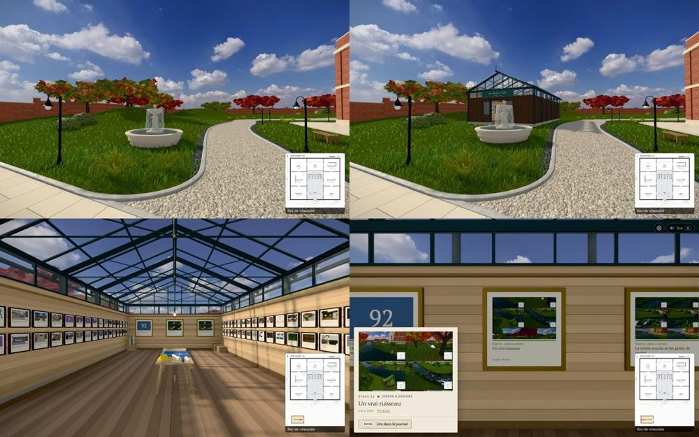
94. La vieille souche et les galets de rivière
en ligne · PR #185Le ruisseau a maintenant ses objets à lui, modélisés avec Meshy : d’abord une image de concept, puis le modèle 3D, que j’ai nettoyé dans Blender. Le tout a coûté 87 crédits sur les 300 prévus.
- La souche : une vieille souche de saule couverte de mousse. Elle est creuse et cassée sur le dessus, et ses racines agrippent la berge jusque dans l’eau. Il y en a deux, une à chaque coude du ruisseau. Une branche morte, blanchie, part de la plus grande et traverse le courant.
- Les galets : 588 galets de rivière, en 7 pierres différentes : granit, quartz, schiste, grès, basalte, calcaire et une pierre rubanée. Ils sont sombres et brillants sous l’eau, humides au bord, secs et parfois moussus au-dessus. Aux radiers, quelques-uns percent la surface. Autour de l’étang, ils sont enterrés à fleur d’eau. Les disques plats ont disparu.
- L’eau : les grandes taches blanches venaient du soleil, dont le reflet s’étalait sur les rides de l’eau. L’eau reste maintenant sombre et transparente. L’écume forme de fins fils le long du courant, derrière chaque pierre, derrière la souche et la branche.
- La cascade : le rebord est arrondi et tenu par trois gros galets. La nappe d’eau est striée et blanchit en tombant dans l’étang.
Les performances ne bougent pas : 2,7 ms par image au bord de l’étang, comme avant. Encore perfectibles : vue de profil, la nappe de la cascade reste une bande un peu raide, et quelques galets de berge sont un peu pâles.
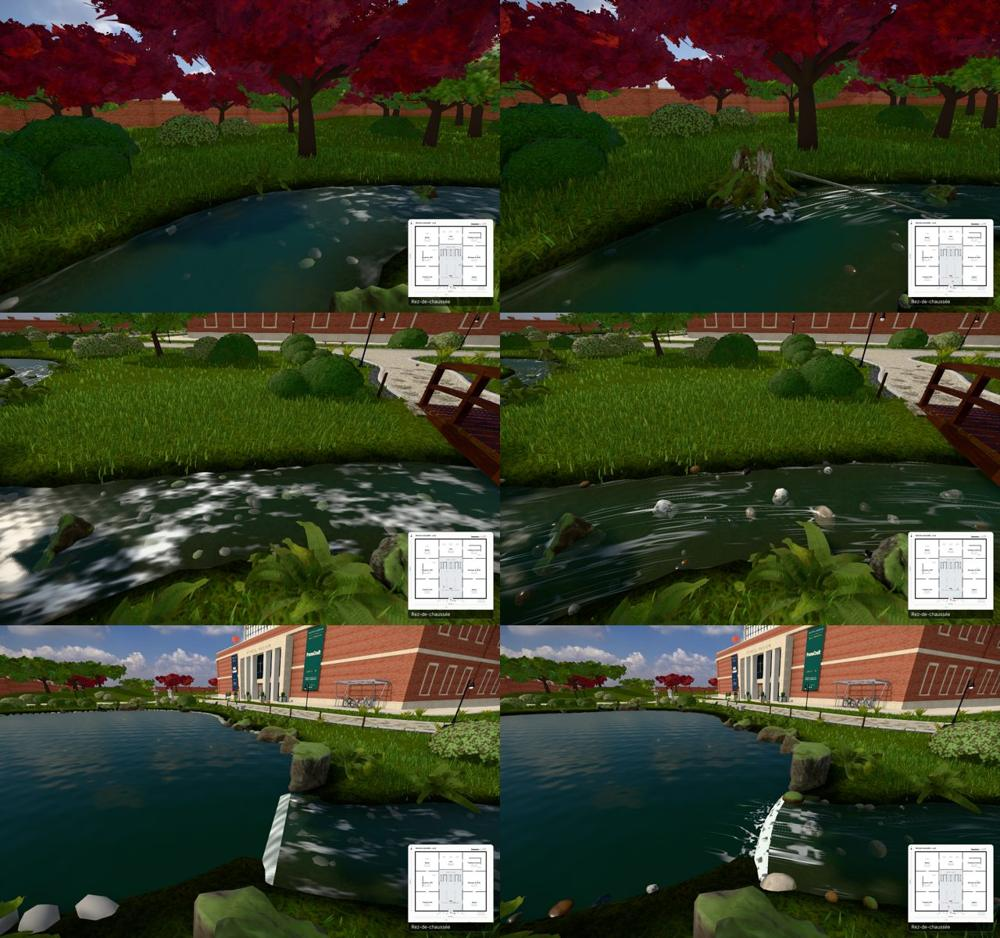
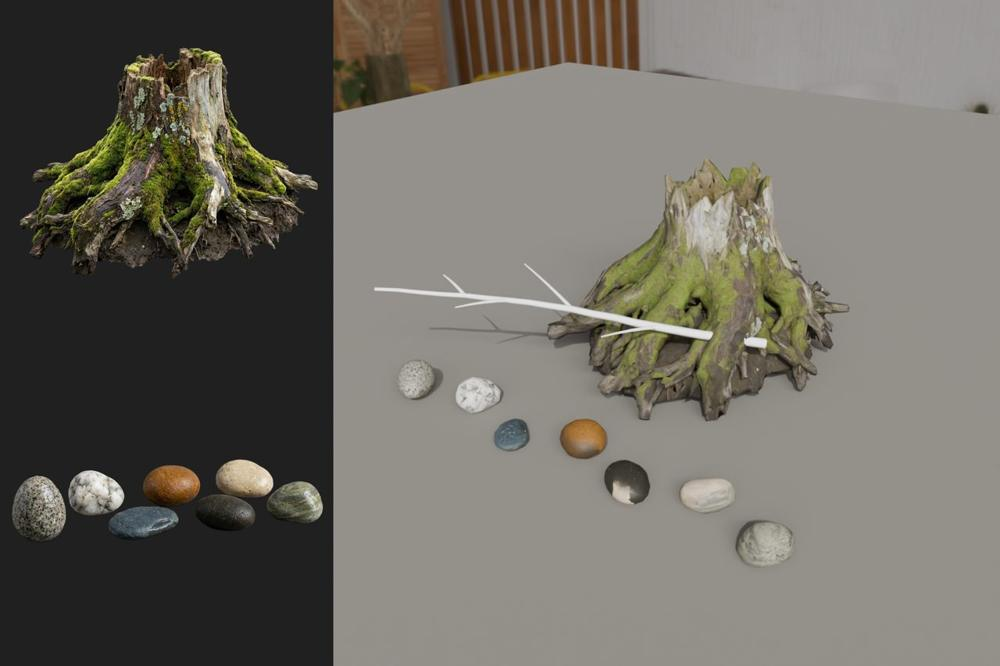
93. Un vrai ruisseau
en ligne · PR #183Ta capture le montrait bien : le ruisseau était un aplat sombre posé au ras de l’herbe, fait de segments droits. Une bande de pelouse le coupait même en deux, là où deux zones du jardin se rejoignaient.
- Le tracé : il serpente maintenant en courbes douces, avec des fosses sombres et des passages plus étroits où l’eau court sur les pierres.
- Le lit : l’eau coule 20 cm sous la pelouse, dans un lit aux berges en pente, jusqu’à 50 cm dans les fosses. Tout le monde en tient compte : ta marche, l’herbe, Bavette et le hérisson.
- L’eau : elle descend le courant, blanchit d’écume aux radiers et le long des berges, et laisse voir les galets sur les bords. En hiver, les rives prennent la glace.
- Les berges : des rochers moussus et des fougères penchées sur l’eau, et une pierre au milieu de chaque radier.
Perfectibles de près : les galets sous la surface ressemblent encore un peu à des disques, et le rebord de la cascade reste droit. Pas encore de souche moussue. (Tout cela est réglé à l’étape 94.)
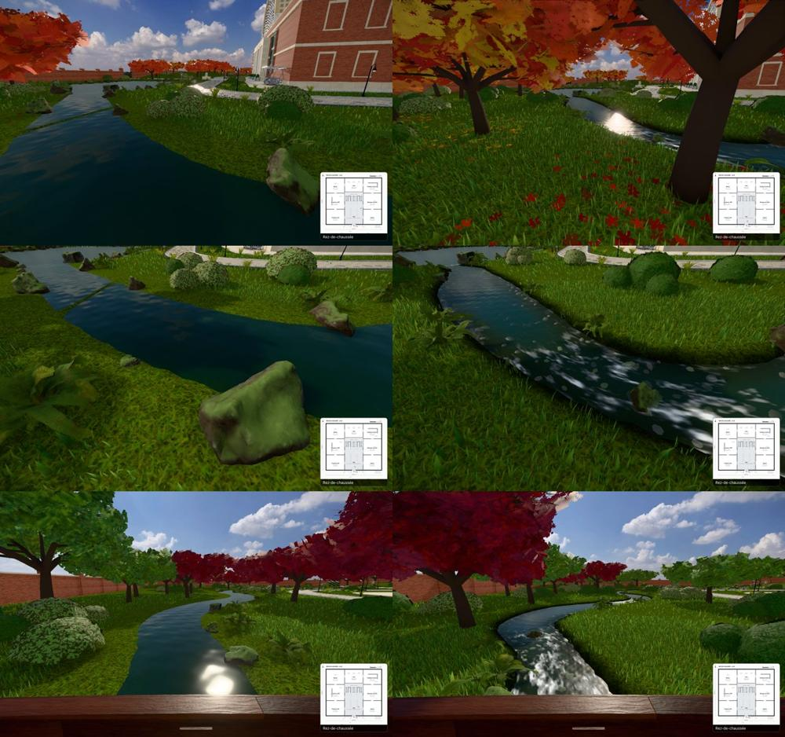
92. Changer de météo ne fige plus le musée
en ligne · PR #179Passer du beau temps à la pluie ou au brouillard figeait le musée près d’une seconde. En cause : le brouillard était retiré et remis à chaque changement, ce qui obligeait à recompiler d’un coup 65 programmes graphiques. Il reste maintenant en place, invisible par beau temps. Toutes les météos et toutes les saisons s’enchaînent sans rien recompiler.
91. La pluie se voit du dedans
en ligne · PR #179À l’intérieur, on ne voyait la pluie qu’en sortant : elle était tout simplement coupée dès qu’un toit passait au-dessus de la caméra. Elle tombe maintenant devant ton regard, et on la voit par les portes. Le brouillard dépend de ce qu’on regarde et plus de l’endroit où l’on se tient : le jardin vu de la nef est aussi brumeux que lorsqu’on y est.
Les gouttes ruissellent sur la verrière et tachent les lanterneaux de l’étage. Il y a aussi un bruit de pluie, étouffé à l’intérieur ; je n’ai pas pu l’écouter, dis-moi s’il sonne juste.
Au passage : une erreur de compilation empêchait les flaques d’apparaître sur certains sols. Corrigée.
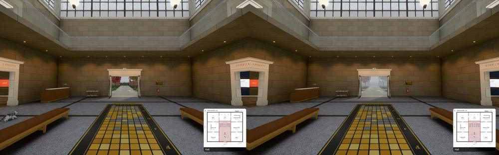
90. Reprendre la main pendant la visite guidée
en ligne · PR #174Pendant la visite guidée, il suffit maintenant de bouger pour l’interrompre : une touche de marche, un clic sur la scène, le joystick ou un glissé du regard. On continue à pied là où l’on se trouve, sans repasser par l’accueil.
89. Plus de murs presque vides
en ligne · PR #173Certaines galeries n’avaient que quatre tableaux, d’autres quinze. Chacune en porte maintenant entre 7 et 13 : les œuvres les moins étoilées des salles les plus pleines vont aux plus vides. Une toile seule sur un long mur est agrandie, sans dépasser la hauteur permise. Aucune œuvre n’est perdue.
Les « affiches vertes » vues en local n’existent pas en ligne : les 120 tableaux du site sont de vraies captures. Une seule était ratée, l’application pokedex figée sur une erreur. Elle sera remplacée cette nuit par son README.
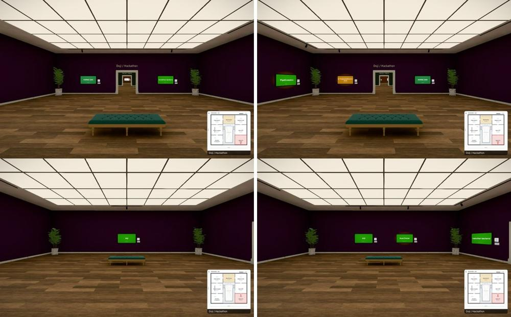
88. Le verre, le bois, les sols, les étiquettes
en ligne · PR #175Les autres points relevés par la revue critique de l’étape 87.
- Les garde-corps de verre : ils sont transparents de face et se voient seulement en biais, comme du vrai verre. Vue du balcon, la nef n’est plus voilée.
- Les bancs Batlló : ils ont maintenant le grain d’un chêne huilé, au lieu d’un plastique crème.
- Les sols : le parquet des galeries ne se répète plus en rangées, le chevron de la salle d’honneur est en chêne naturel au lieu d’orange, et le terrazzo du hall est plus calme.
- La constellation : ses étiquettes se lisent la nuit, en crème avec un contour sombre.
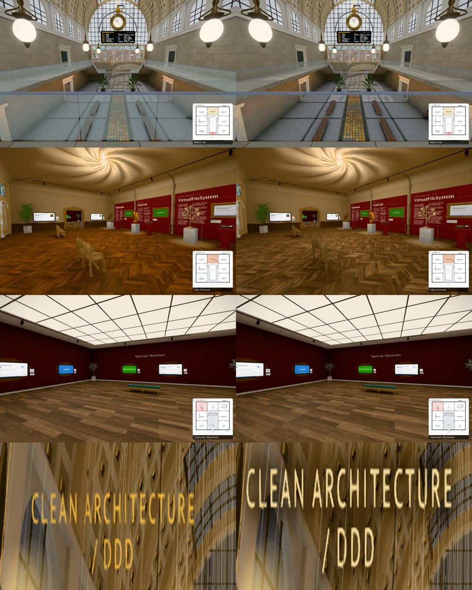
87. De vraies plantes de musée
en ligne · PR #171La revue critique a commencé par les plantes, et c’était mérité. Dans les coins des galeries, il y avait un cube gris nu, parfois un pot posé dans un autre pot, et des plantes d’appartement grossies qui se perdaient dans des salles de 16 m. La nef et la salle d’honneur, elles, n’avaient aucune plante.
- Trois plantes à la taille des lieux : un palmier kentia de 3,30 m, un figuier lyre de 2,90 m et un olivier au tronc tordu de 2,80 m. Leurs feuilles sont découpées d’après des planches botaniques.
- De vraies jardinières : une vasque de bronze patiné ou un bac de pierre cannelé.
- Une espèce par galerie, aux quatre coins. Deux kentias encadrent le grand escalier, deux figuiers la baie de la salle d’honneur.
Relevés pendant la revue, corrigés aux étapes 88 et 89 :
- les garde-corps de verre trop laiteux, vus du balcon ;
- les bancs Batlló qui paraissent en plastique ;
- le parquet des galeries qui se répète ;
- les étiquettes de la constellation, peu lisibles la nuit ;
- quelques murs de galerie presque vides.
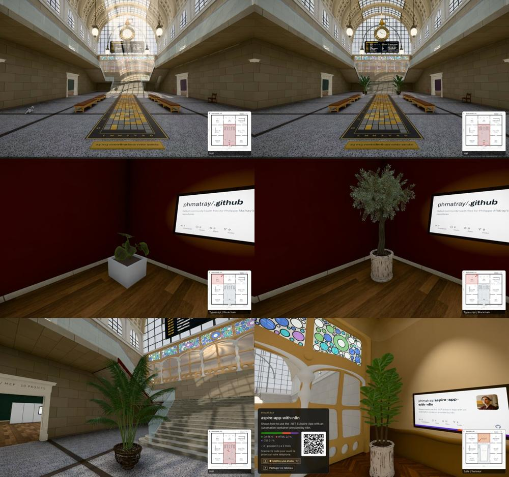
86. Des lampadaires, et la nuit s’éclaire
en ligne · PR #169Il manquait de lumière dehors. Voici 32 lampadaires à crosse noirs de 2,20 m, d’après le modèle Lindby Daphne que tu m’as envoyé. Ils bordent le parvis, l’allée principale, la ceinture du jardin et ses accès. Leurs globes s’allument au crépuscule et posent au sol des flaques de lumière chaude. On les contourne, Bavette aussi.
La façade sud est éclairée d’en bas par neuf projecteurs, et 25 spots encastrés sous les balcons du hall lèchent les murs. Cet éclairage ne coûte rien de mesurable : aucune lumière supplémentaire dans le moteur, tout est calculé dans les matières.
Encore sombres : les façades nord, est et ouest, et les berges de l’étang loin des allées.
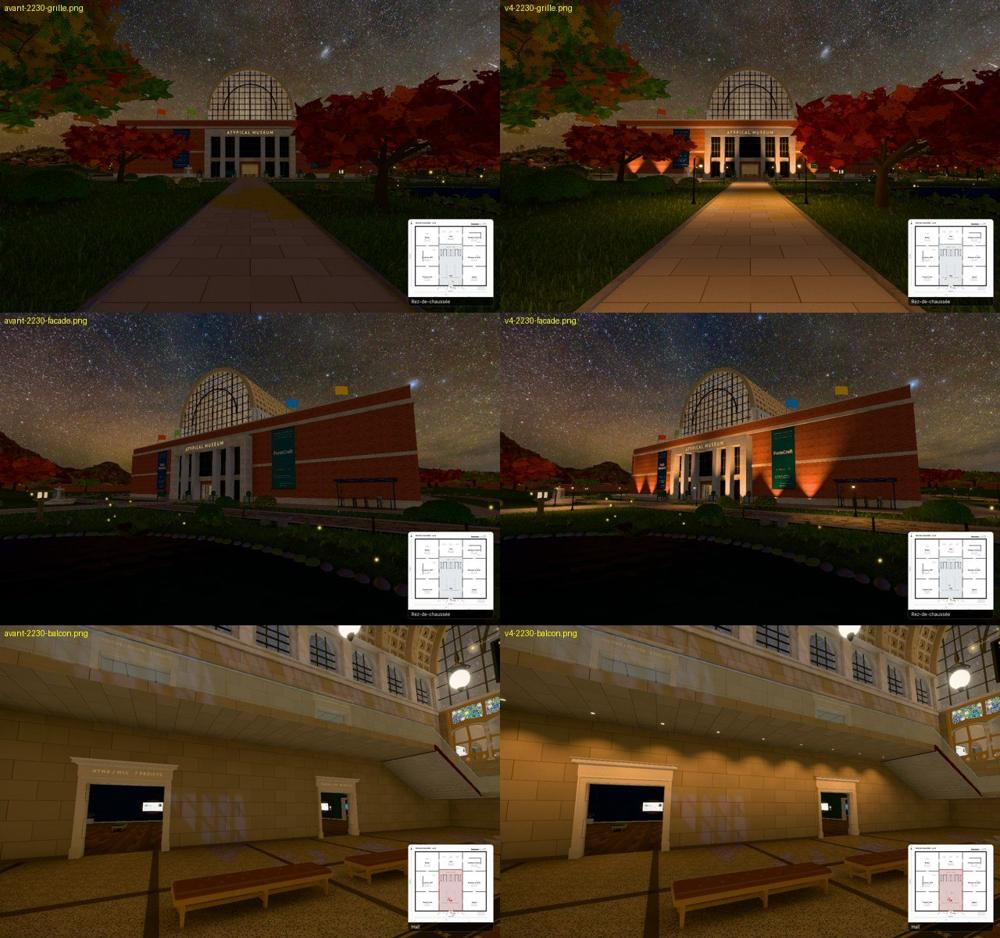
85. Un panneau de réglages
en ligne · PR #167À côté du bouton du son, une roue dentée (ou la touche R) ouvre les réglages, dans le style du billet d’entrée : le son et son volume, la qualité de l’image, les ombres, le champ de vision, la sensibilité de la souris, l’affichage du plan, le mouvement réduit.
On peut aussi choisir l’heure, la météo et la saison au lieu des vraies. Les choix s’appliquent tout de suite et restent mémorisés sur l’appareil. Sur téléphone, le panneau s’ouvre depuis le bas de l’écran.
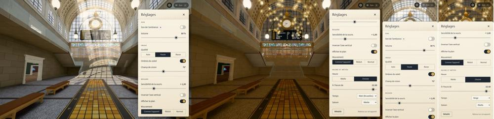
84. Des textures compressées pour les modèles
en ligne · PR #165Dernier chantier de la passe performances : les textures du jardin, de l’escalier, des plantes et des sculptures sont maintenant compressées pour la carte graphique. Elles occupent 70 Mo de mémoire en moins et ne bloquent plus le navigateur pendant le chargement. Les coussins de velours ont aussi perdu un tiers de leurs triangles, sans différence visible à un mètre.
83. Un billet d’entrée composté
en ligne · PR #164Orsay était une gare : on entre maintenant au musée avec un billet. Il est imprimé du vrai musée : le nombre d’œuvres et de salles de l’accrochage du jour, la date et l’heure de ta visite, et ton numéro de visiteur, tiré du compteur de l’entrée. Si tu arrives par un lien partagé, le billet indique ta destination.
« Composter et entrer » frappe le talon d’un tampon violet à l’heure, puis le billet s’efface sur la nef. La visite guidée part du même geste. Les consignes s’adaptent : le clavier sur ordinateur, les doigts sur téléphone.
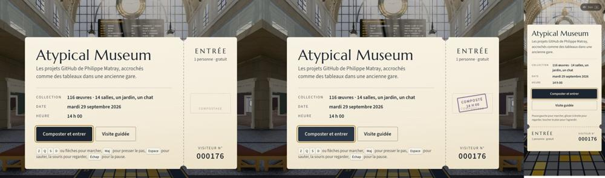
82. On peut sauter
en ligne · PR #162La seule frustration d’un de tes amis : on ne pouvait pas sauter. La barre d’espace lance maintenant un saut de 45 cm, 0,6 s en l’air, seulement depuis le sol. Le saut ne soulève que le regard : on ne franchit toujours ni mur ni garde-corps. Vérifié dans le moteur : l’œil passe de 1,62 à 2,08 m, puis retombe.
81. Bavette fait la sieste sur un banc
en ligne · PR #161De temps en temps, trois à cinq fois toutes les deux heures, Bavette choisit un banc libre près de lui, dans le hall, une galerie ou le jardin. Il saute dessus, tourne une fois et se roule en boule comme sur ta photo, la queue ramenée autour de lui. Il dort deux à six minutes : il respire, une oreille frémit. Puis il s’étire et redescend.
Il ne monte jamais si tu te tiens à moins de 1,30 m du banc. Le saut est calé sur la hauteur exacte de chaque assise, et un test vérifie sur deux heures qu’il ne traverse jamais un banc.
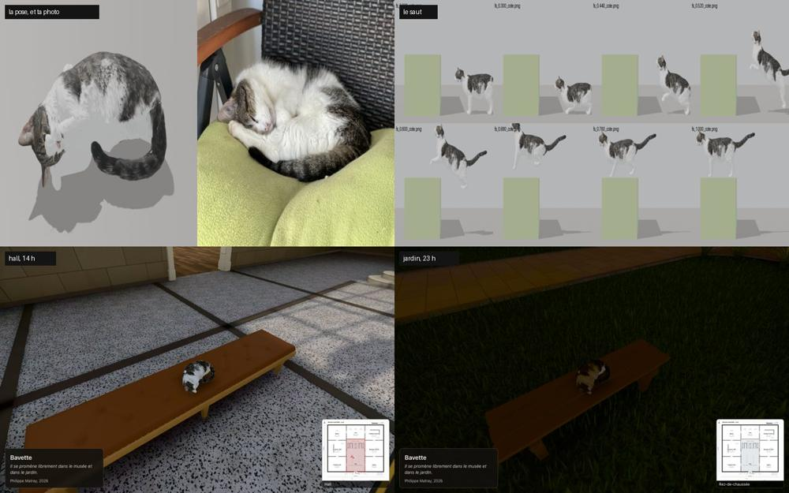
80. Le compteur de visiteurs compte enfin
en ligne · PR #160Le compteur affichait 000001. Le service de comptage, lui, en était déjà à 158 visites. La cause : le site gardait le chiffre du premier chargement dans la session du navigateur, et le ressortait ensuite tel quel. Un onglet ouvert le jour où le compteur valait 1 restait donc figé à 1.
Maintenant, le premier chargement compte la visite, et les suivants relisent le vrai total sans recompter. Un test reproduit exactement ton cas.
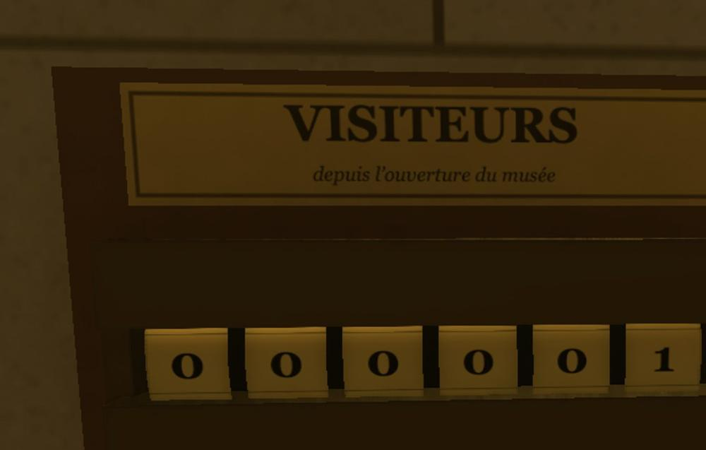
79. Un bébé hérisson au jardin
en ligne · PR #159D’après ta photo et ta vidéo : un bébé hérisson de 16 cm, aux piquants sombres à pointe crème. Il trottine sur la pelouse autour de l’étang, s’arrête pour renifler, et se roule en boule quand on s’approche à moins d’un mètre et demi. Il sort surtout la nuit et hiberne en hiver. L’herbe se couche autour de lui pour qu’on le voie.
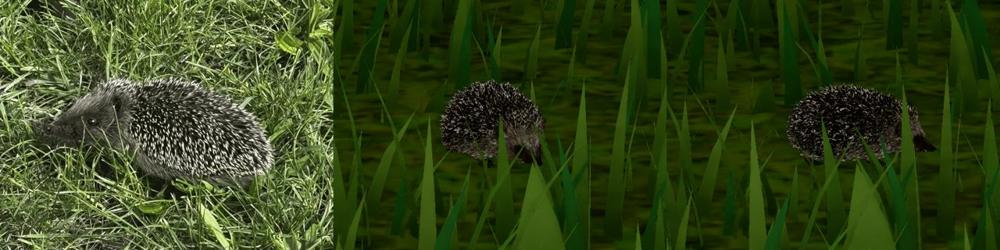
78. La passe performances
en ligne · PR #155 à #158Un audit a d’abord mesuré le moteur sur huit points de vue. Puis quatre chantiers ont tourné en parallèle, avec une règle : optimiser sans rien retirer.
- Les ombres ne sont plus recalculées à chaque image, seulement quand quelque chose bouge. Hall vu du balcon : 10,0 → 4,4 ms par image. Salle d’honneur : 6,4 → 3,8 ms. Jardin : 5,0 → 2,6 ms. Façade : 11,1 → 5,1 ms.
- La première visite s’ouvre en 12 s au lieu de 43 à 50 s : les shaders se compilent sans bloquer, et il y en a 107 au lieu de 270.
- Les textes de l’atelier et des vitrines sont dessinés en lots : 424 appels de dessin au lieu de 688 dans la galerie voisine.
- Le parc : l’herbe n’est plus dessinée dans la nef, et les érables lointains utilisent une version allégée, identique à l’œil. 13 à 25 % de triangles en moins.
- La mémoire graphique baisse de près de 100 Mo, et la résolution ne baisse que si la machine ne suit plus.
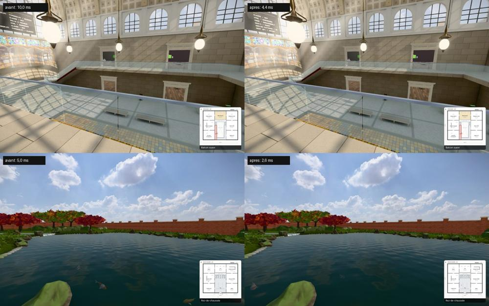
77. Un index et des onglets dans ce journal
en ligne · PR #154Le journal a maintenant des onglets par thème, en haut de la page, et un index des étapes, repliable. L’onglet choisi est mémorisé d’une visite à l’autre.
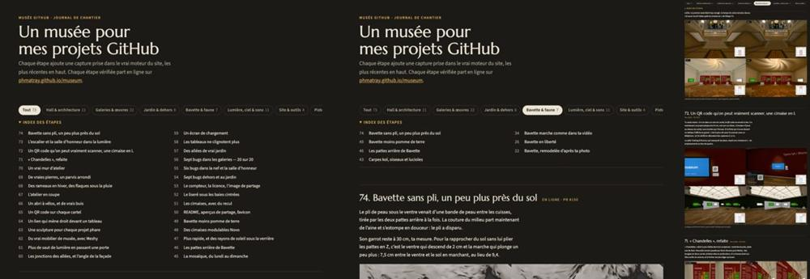
76. La carte se zoome au doigt
en ligne · PR #153Sur téléphone, le petit plan était illisible. Un toucher l’ouvre maintenant en plein écran. On l’agrandit à deux doigts jusqu’à six fois, et on le fait glisser d’un doigt. Sur ordinateur : la molette, le double-clic et Échap.
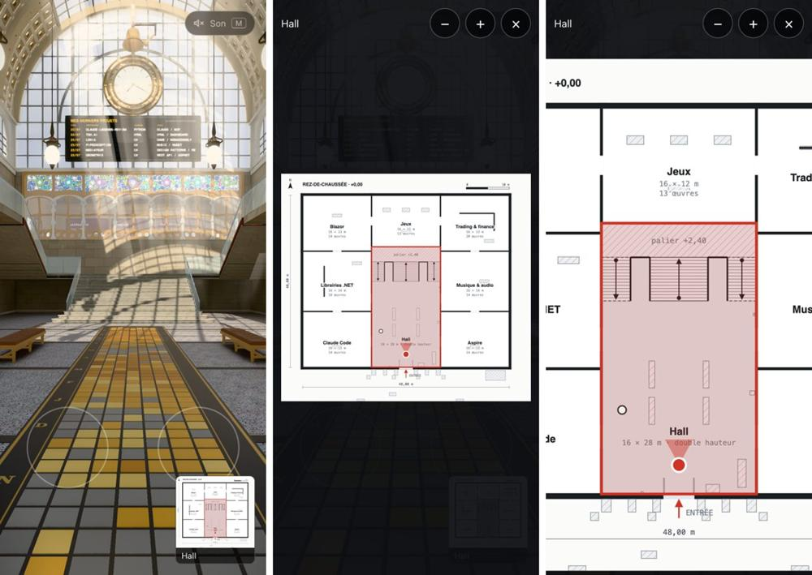
75. Bavette retrouve les proportions de la vidéo
en ligne · PR #152Tu avais raison : il n’avait plus ses proportions. À l’étape 74, je l’avais abaissé, dans le mauvais sens. En réalité, il marchait accroupi : 25 cm au garrot en marchant au lieu de 30.
En mesurant six images de profil de ta vidéo, il marche maintenant à 29,4 cm, la tête portée au-dessus du dos. Ses rapports de proportions sont à 5 % de la vidéo. Et d’après tes nouvelles vidéos et ta photo, son pelage est redevenu surtout blanc, tigré sur la tête, le dos et la queue.
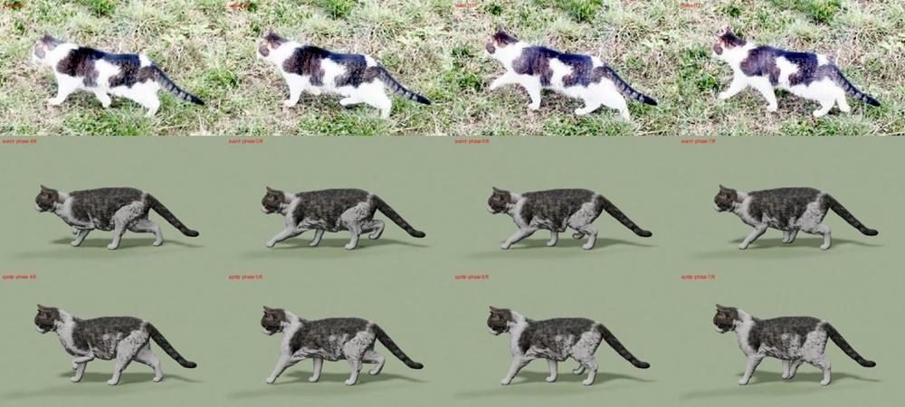
74. Bavette sans pli, un peu plus près du sol
en ligne · PR #150Le pli de peau sous le ventre venait d’une bande de peau entre les cuisses, tirée par les deux pattes arrière à la fois. La couture du milieu part maintenant de l’aine et s’estompe en douceur : le pli a disparu.
Son garrot reste à 30 cm, ta mesure. Pour la rapprocher du sol sans lui plier les pattes en Z, c’est le ventre qui descend de 2 cm et la marche qui plonge un peu plus : 7,5 cm entre le ventre et le sol en marchant, au lieu de 9,4.
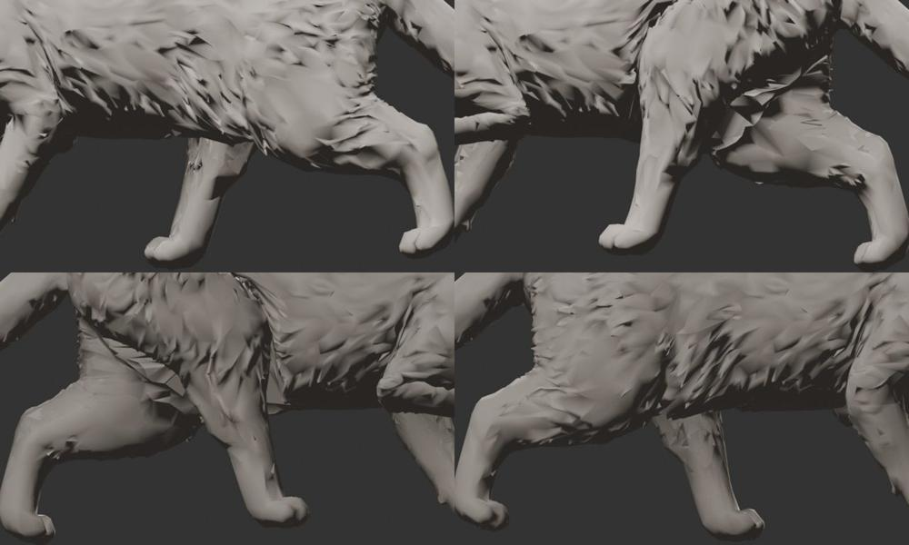
73. L’escalier et la salle d’honneur dans la lumière
en ligne · PR #148, #149L’escalier de marbre et la salle d’honneur sont des modèles Blender à part : ils n’avaient pas leur part du calcul de lumière, et l’escalier ressortait trop clair. Ils ont maintenant leur place dans l’atlas de lumière. La nuit, le dessous des volées ne luit plus ; il prend le ton de la pierre des murs.
Dans la salle d’honneur, les coins s’assombrissent et la lampe réchauffe la voûte. Le premier essai était trop orangé ; la lampe du calcul est plus douce. J’ai aussi recuit l’atlas après la cimaise en L de l’étape 72.
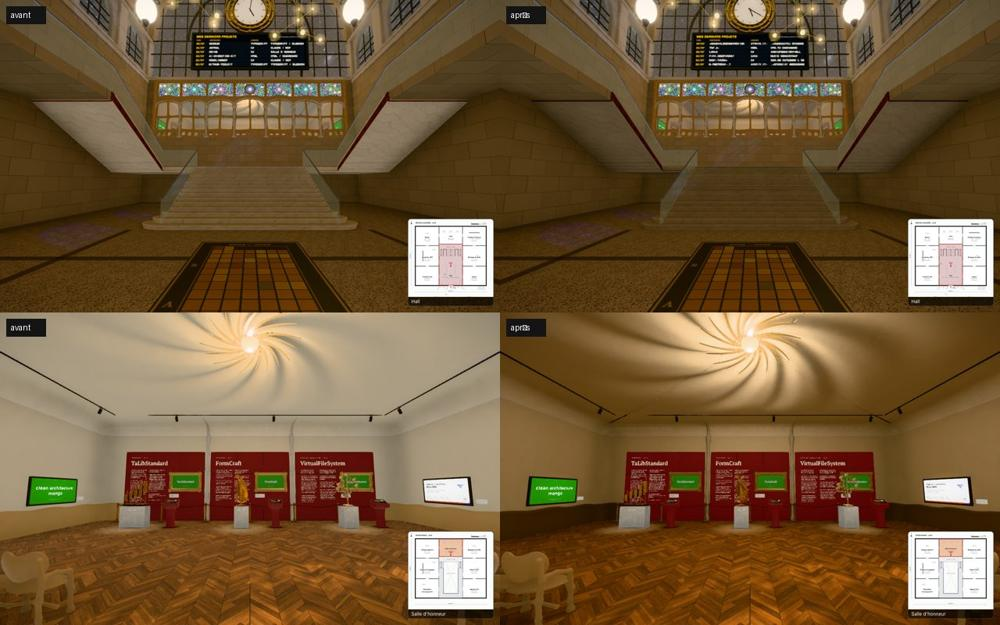
72. Un QR code qu’on peut vraiment scanner, une cimaise en L
en ligne · PR #147Tu avais raison : à 4 cm dans un coin du cartel, le QR code ne servait à rien. Il a maintenant sa propre plaque de 24 cm, noir pur sur blanc, à hauteur d’yeux au-dessus du cartel, sans lumière qui l’écrase. Et la fiche qui s’ouvre devant un tableau l’affiche en grand : c’est le plus sûr pour le scanner avec un téléphone. Je l’ai vérifié en décodant des captures à 1,2 m.
La salle Trading & finance, qui manquait de place, reçoit une cimaise en L : six emplacements au lieu de quatre.
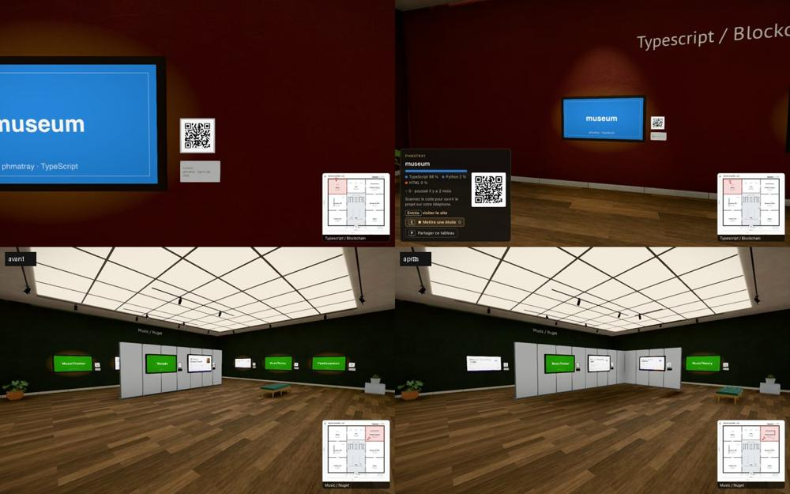
71. « Chandelles », refaite
en ligne · PR #146« Chandelles » était la plus faible des trois sculptures : marbrée de près, plate vue de biais. Nouvelle version passée par Nano Banana puis Meshy : des bougies en blocs carrés, échelonnées en profondeur, d’un bronze doré uni. Elle a enfin du volume, et le fichier est plus léger qu’avant.
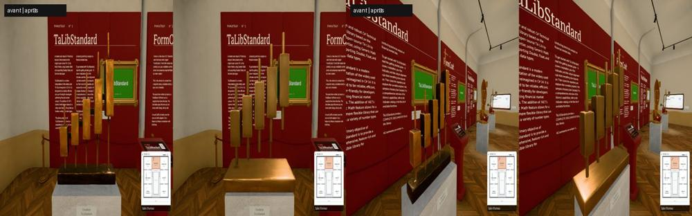
70. Un vrai mur d’atelier
en ligne · PR #145Les tableaux lumineux du mur nord brouillaient la lecture des vitrines. Le mur est maintenant un panneau bleu ardoise, avec une trame de dessinateur et un rail de laiton. Les trois toiles qui y étaient sont parties dans d’autres galeries ; aucune n’est perdue.
Les couches portent les vrais noms de chaque projet (« MudBlazor · Fluent UI », « Tests unitaires · Benchmarks »…). Et un dépôt JavaScript ou TypeScript à espaces de travail aurait lui aussi son atelier.
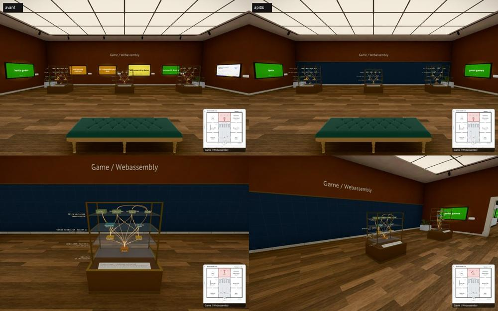
69. De vraies pierres, un parvis arrondi
en ligne · PR #144Les pierres des allées et les pas japonais sont maintenant en granit lichéné. Chacune a sa forme, sa teinte et un bord biseauté, et s’enfonce un peu dans le gravier.
Le parvis perd ses angles droits : des coins arrondis de 4 m, suivis par la bordure, le gazon et même le bruit des pas.
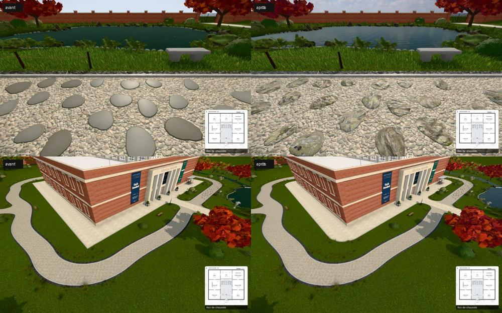
68. Des rameaux en hiver, des flaques sous la pluie
en ligne · PR #143En hiver, les érables nus avaient seulement leurs grosses branches. Ils ont maintenant un réseau de rameaux fins, sans coût d’affichage supplémentaire.
Sous la pluie, les chemins ne faisaient que foncer. Maintenant des flaques éparses reflètent le ciel et se couvrent de ronds de pluie, puis sèchent lentement. Au passage, le dallage de l’allée principale, qui restait sec sous l’averse et nu sous la neige, reçoit enfin la pluie et la neige.
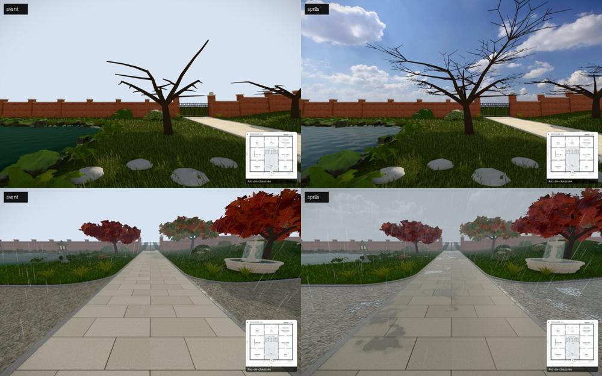
67. L’atelier en coupe
en ligne · PR #141Au rez-de-chaussée, dans la galerie nord, juste sous la salle d’honneur, trois vitrines montrent comment sont construits tes projets phares. En haut, le projet fini ; en bas, son atelier. Les couches du logiciel sont posées sur des plaques de verre : socle, extensions, démonstrations, tests. Chaque projet .NET y est un bloc, dont la taille suit la quantité de code, et les références entre projets sont des fils lumineux parcourus d’une impulsion.
Tout est réel : à chaque publication, un script lit l’arborescence et les fichiers .csproj de chaque dépôt sur GitHub. Le cartel indique le commit lu. Pour FormCraft, par exemple, on voit le socle FormCraft, ses deux extensions MudBlazor et Fluent UI, leurs applications de démonstration et leurs tests.
À revoir : les tableaux lumineux du mur nord, derrière les vitrines, brouillent un peu la lecture, et les noms de couches sont génériques. Seuls les projets .NET sont gérés pour l’instant. Corrigé à l’étape 70.
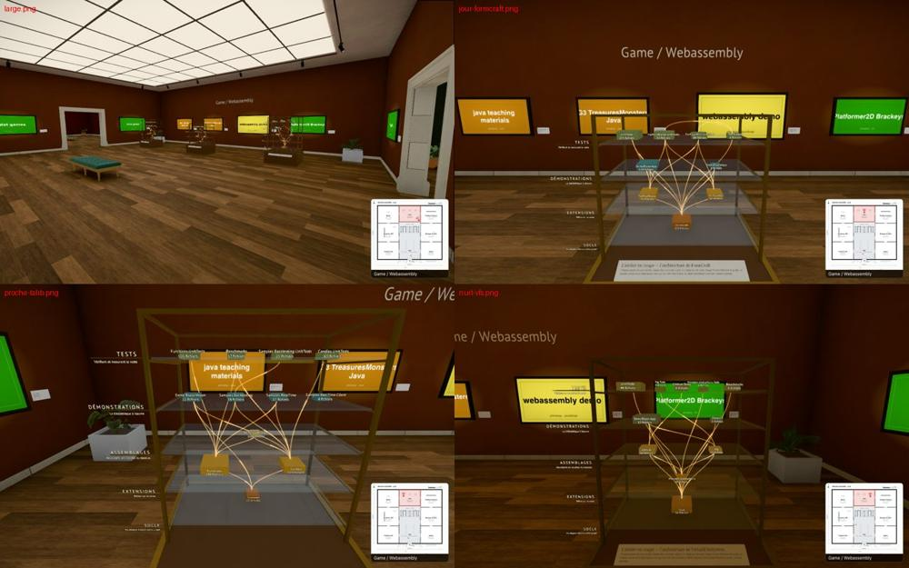
66. Un abri à vélos, et de vrais buis
en ligne · PR #140Tu avais raison sur les trois points. Les vélos étaient identiques, enfoncés dans le sol et sans cadenas. Et les buis n’étaient qu’une coquille creuse de quelques feuilles.
- Enfoncés : le mobilier extérieur était posé au niveau de la pelouse, alors que les dalles du parvis sont 4 cm plus haut. La hauteur du sol vient maintenant d’une seule source, et un test vérifie que chaque vélo touche exactement le sol.
- L’abri : celui de ta photo, avec ses poteaux galvanisés, son toit de polycarbonate et ses cinq arceaux, contre l’aile est.
- Trois vélos différents : un hollandais noir, un vélo de route rouge et un vélo de dame bleu ciel à panier. Les deux nouveaux sont passés par Nano Banana puis par Meshy. Chacun est appuyé contre son arceau avec un antivol en U jaune.
- Les buis : une boule pleine et dense de petites feuilles, dans une caisse Versailles en bois peint gris-vert à montants de fonte.
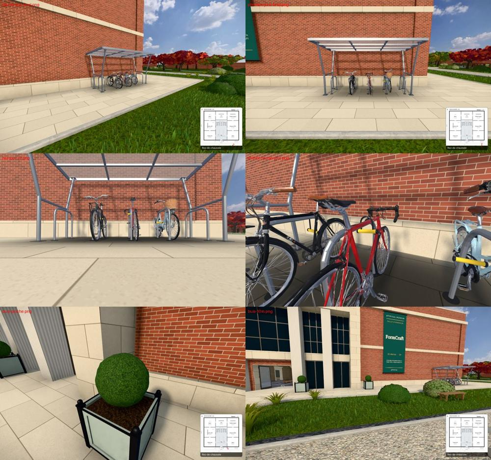
65. Un QR code sur chaque cartel
en ligne · PR #139Chaque cartel porte maintenant un petit QR code qui ouvre le dépôt GitHub sur un téléphone. C’est utile quand le musée est projeté sur grand écran, lors d’une conférence ou sur un stand. Les bornes de la salle d’honneur en ont un plus grand. Les 116 codes sont dessinés en une seule fois et restent lisibles la nuit. J’ai vérifié qu’ils se scannent vraiment, en décodant des captures du musée de jour et de nuit : sur un mur peint, sur une cimaise et sur une borne.
À 4 cm, il faut s’approcher tout près du cartel pour scanner. Celui des bornes se lit plus facilement. Corrigé à l’étape 72.
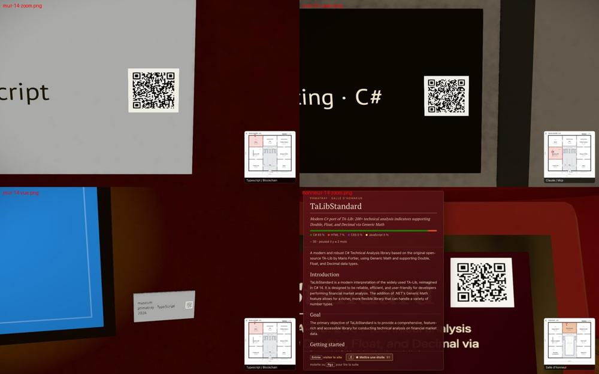
64. Un lien qui mène droit devant un tableau
en ligne · PR #138phmatray.github.io/museum/?p=FormCraft ouvre le musée directement devant le tableau ou la vitrine. L’accueil annonce « Vous êtes attendu devant FormCraft », puis la carte du projet s’ouvre et son spot s’allume. Le bouton « Partager ce tableau », ou la touche P, copie le lien, ou ouvre le partage natif sur un téléphone.
Chaque projet a aussi sa propre page de partage, …/museum/p/FormCraft/, qui mène ensuite dans le musée. Sur un réseau social, le lien montre alors la capture et la description du projet, et non l’image générale du musée.
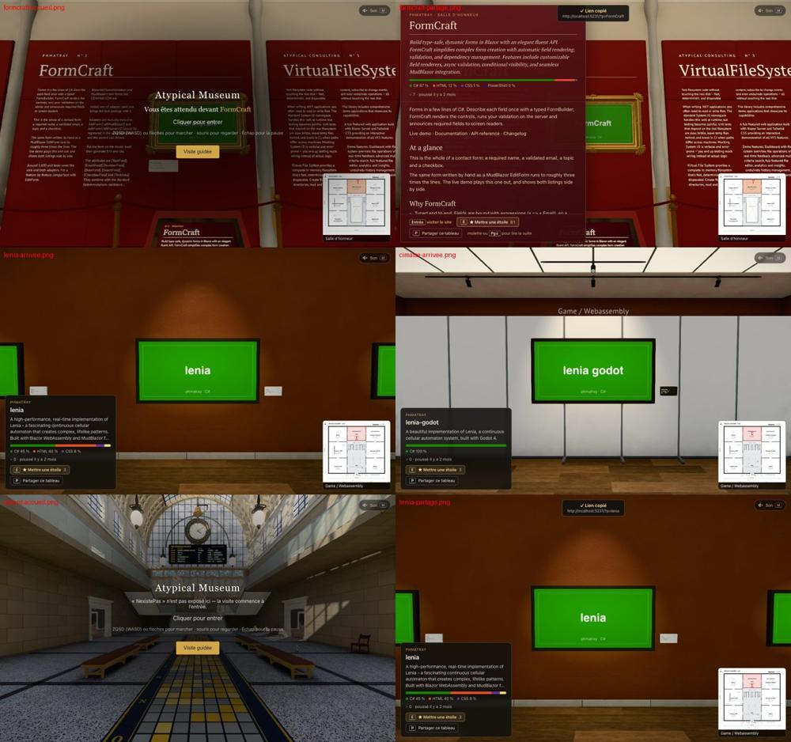
63. Une sculpture pour chaque projet phare
en ligne · PR #137 et #136Devant chaque vitrine de la salle d’honneur, une sculpture de bronze incarne son projet, sur un socle de pierre avec son cartel et un halo de lumière au sol :
- « Formulaire », pour FormCraft : une spirale de champs de saisie et de cases à cocher, dont une cochée ;
- « Arborescence », pour VirtualFileSystem : un arbre à angles droits dont chaque branche finit par un dossier ;
- « Chandelles », pour TaLibStandard : un graphique en chandeliers japonais qui monte.
Il a fallu trois essais. Les deux premiers, en 3D directe, étaient petits, sombres et peu lisibles, et je ne les ai pas publiés. Ta suggestion de passer par Nano Banana a tout changé : d’abord une image de concept, qu’on transforme ensuite en 3D (les concepts ci-dessous). Si tes projets phares changent, les sculptures suivent les vitrines.
Au passage, le panneau « Sortie » est devenu un vrai luminaire : pictogramme normalisé et flèche, sans texte coupé.
« Chandelles » reste la plus faible : sa surface est un peu marbrée de près et elle manque d’épaisseur vue de biais. Refaite à l’étape 71.
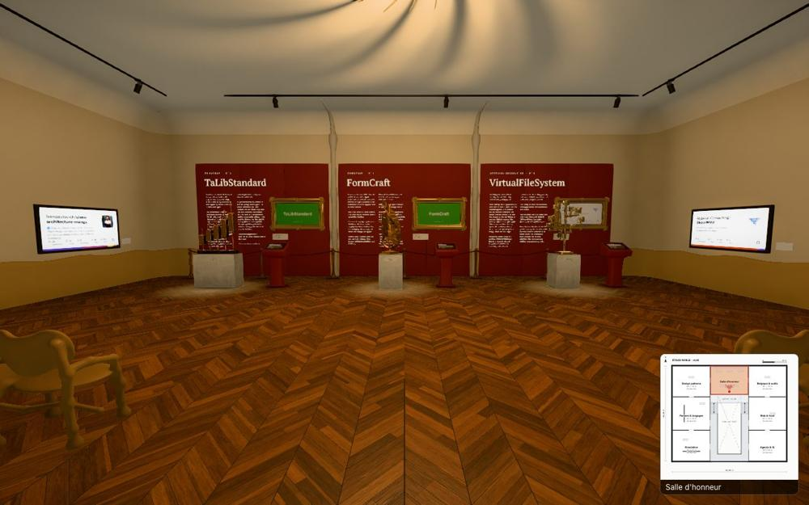
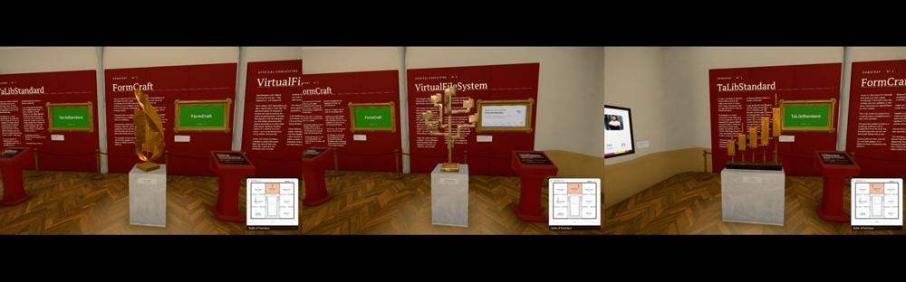
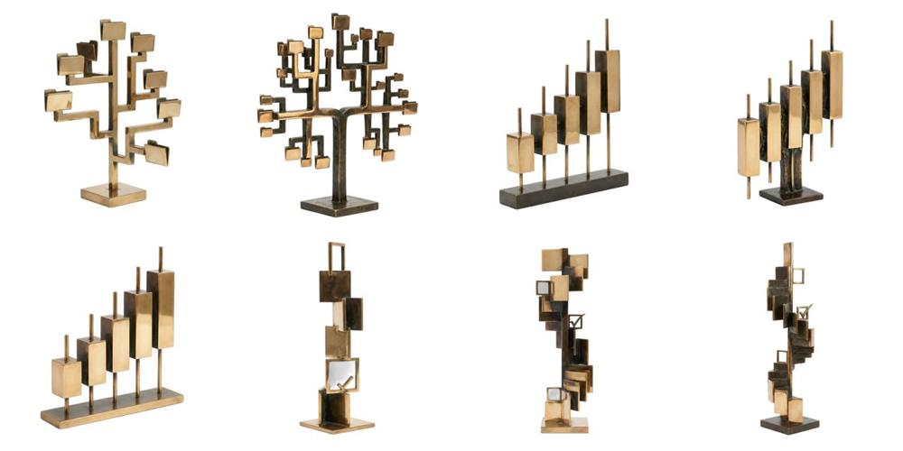
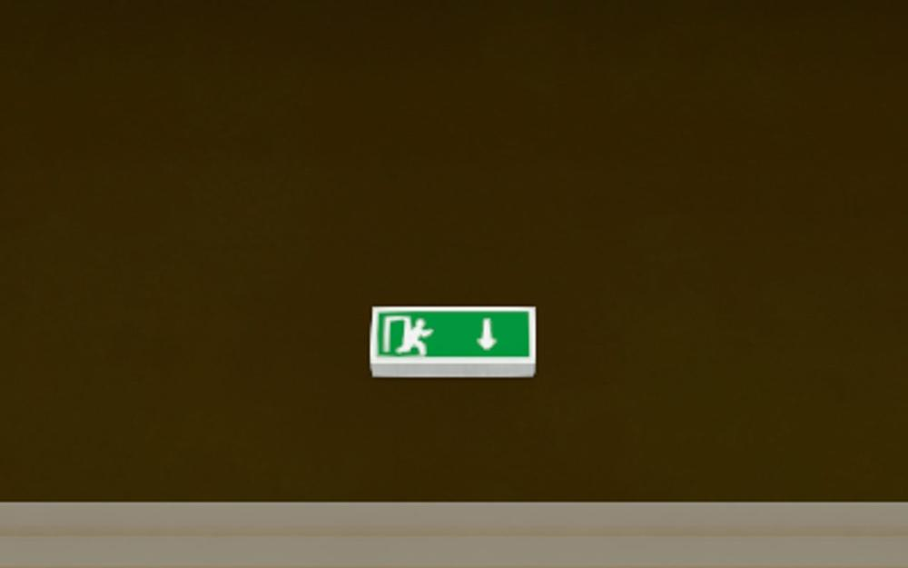
62. Du vrai mobilier de musée, avec Meshy
en ligne · PR #135Des objets générés avec Meshy, à l’échelle réelle et allégés. Pour le présentoir et les caisses Versailles, je suis passé par une image Nano Banana, comme tu l’as suggéré : c’est nettement plus fidèle.
- Dedans : un cordon de velours sur poteaux de laiton devant les vitrines de la salle d’honneur, une chaise de gardien dans la nef, un présentoir de livres d’art près de l’accueil, des extincteurs muraux et des panneaux « Sortie » éclairés au-dessus des portes.
- Dehors : des vélos garés le long de l’aile est, une fontaine de pierre à l’eau animée sur la pelouse ouest, quatre caisses Versailles avec leurs boules de buis devant l’entrée, et un panneau d’horaires. Il affiche « du lever au coucher du soleil » avec les vraies heures du jour à Bruxelles, calculées comme le reste du ciel.
Personne ne les traverse, ni toi, ni la visite guidée, ni Bavette. Environ 376 crédits Meshy.
Les sculptures de la salle d’honneur arrivent à part : la première version ne méritait pas d’être publiée.
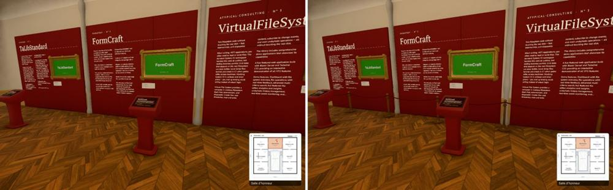
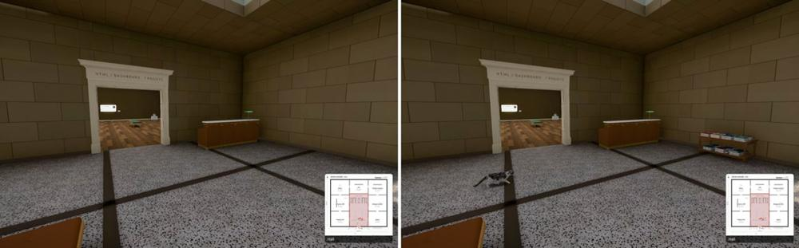
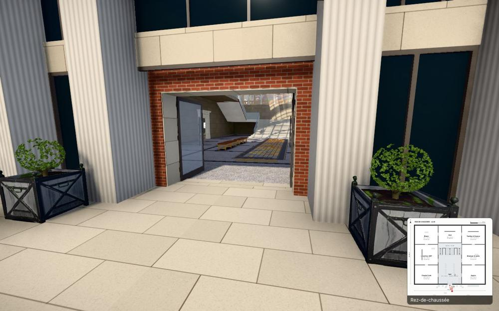
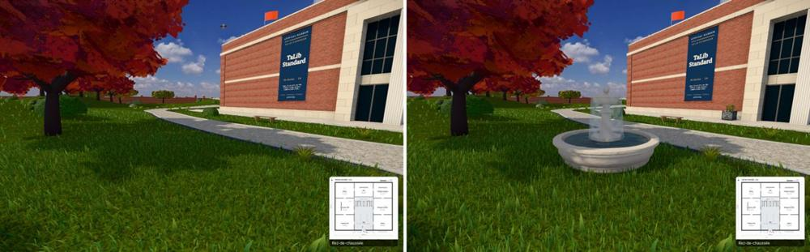
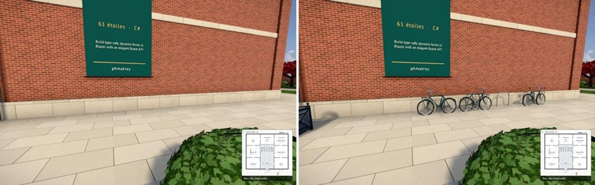
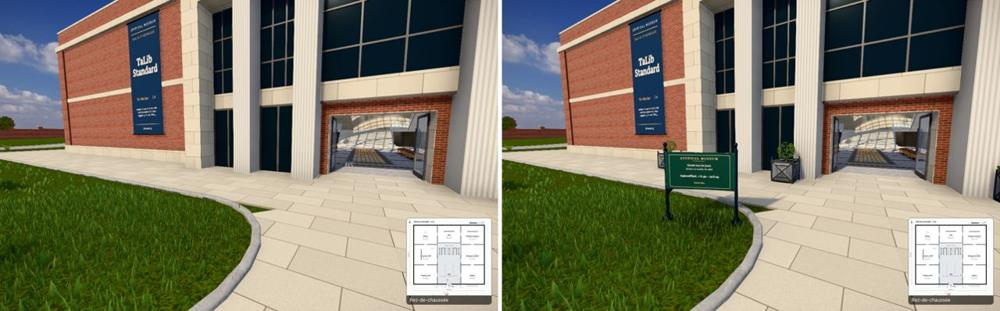
61. Plus de saut de lumière en passant une porte
en ligne · PR #134Chaque salle avait sa propre capture de reflets. Celle de la salle où tu te trouvais servait aussi à éclairer toute la scène, si bien qu’en franchissant une porte tout changeait d’un coup : de 3 à 22 % le jour, et jusqu’à 84 % la nuit sur certains sols de l’étage. Un bref creux sombre s’y ajoutait pendant la transition.
Maintenant, ces captures ne servent plus qu’aux reflets, sur le laiton, le verre et le marbre, et elles se mélangent selon ta position dans l’embrasure. La lumière ambiante ne dépend plus de l’endroit où tu te tiens. Au seuil, le saut tombe sous 2 %, de jour comme de nuit.
La lueur dorée de la nef la nuit venait justement de ces captures. Elle est maintenant attachée aux murs et au sol du hall, et on la retrouve telle qu’avant.
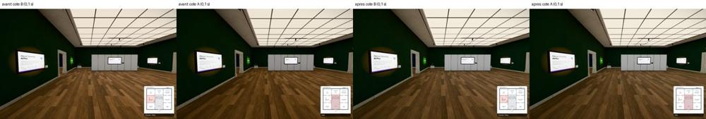
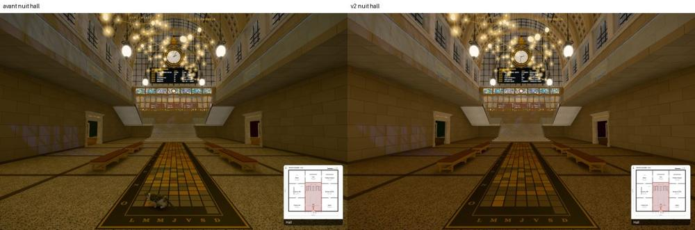
60. Les jonctions des allées, et l’angle de la façade
en ligne · PR #133Tu voyais encore des défauts là où l’axe dallé croise l’allée de ceinture. Il y en avait cinq :
- Des coins d’herbe entre les dalles et le gravier. Les deux surfaces étaient découpées chacune de leur côté et laissaient un triangle vide entre elles. Elles se chevauchent maintenant sous leurs bordures.
- Des bordures facettées et coudées. Elles suivaient une ligne faite de segments inégaux. Elles sont maintenant lissées tous les 20 cm, avec des angles nets aux coins du parvis.
- Un axe sans bordure au croisement. Un filet de pierre affleurant le sépare désormais du gravier, sans marche où trébucher. L’axe fait maintenant 3,60 m, trois dalles du parvis, dont les joints se prolongent sans coupe.
- Un liseré pointillé au pied de la bordure du parvis. C’était la bande de galets écrasée contre la bordure ; elle s’enfonce maintenant sous la pelouse.
- Le bandeau de pierre qui s’arrêtait avant l’angle du bâtiment. Il disparaissait derrière les pilastres. Il passe maintenant devant eux et tourne l’angle.
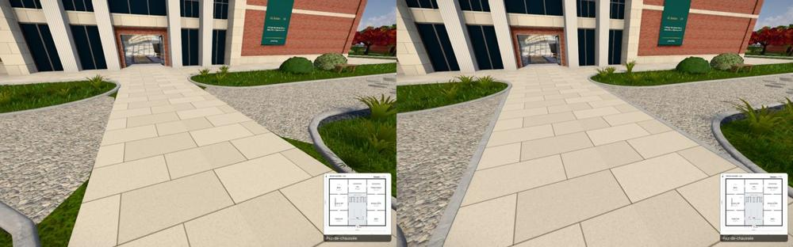
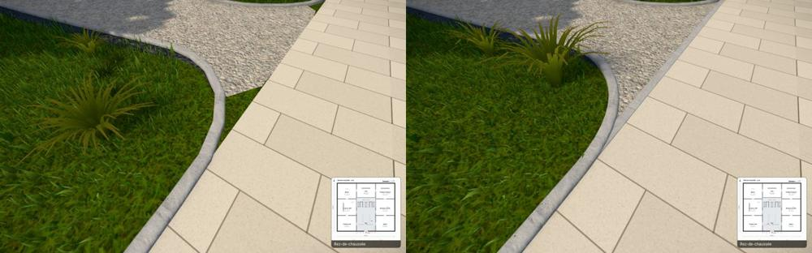
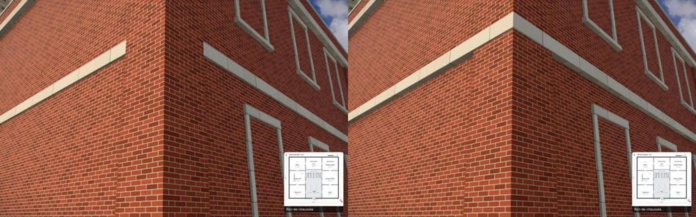
59. Un écran de chargement
en ligne · PR #128 et #129Au démarrage, un écran sombre au nom du musée s’affiche, avec l’horloge de la gare dont les aiguilles tournent au fil du chargement et une barre dorée qui ne recule jamais. Il attend les modèles, les textures, le ciel, la lumière, les tableaux, les polices et la première météo. Ensuite il prépare l’affichage (compilation des shaders, capture des reflets) avant de s’effacer en fondu. Rien n’apparaît plus par à-coups : je l’ai mesuré, aucune requête n’arrive après le fondu, même sur une connexion 3G simulée.
Deux retouches : une copie figée de cet écran s’affiche dès la première seconde, au lieu d’une page noire pendant que le code arrive. Et sur un réseau lent, une texture compressée qui arrive lentement n’est plus doublée de sa version JPG ; avant, on téléchargeait les deux. L’écran d’accueil passe aussi en français : « Cliquer pour entrer », « Visite guidée ».
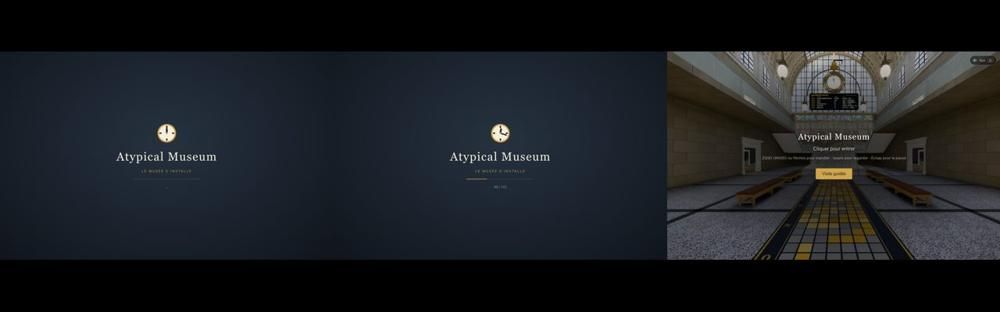
58. Les tableaux ne clignotent plus
en ligne · PR #130C’était une régression de l’étape 56. Le passage en haute définition des tableaux proches se battait avec le tri qui ne dessine que les salles visibles. Pendant une fraction de seconde, un tableau montrait l’image d’un autre ou disparaissait. Et comme ce passage se faisait sans marge, marcher le long d’un mur le déclenchait en boucle.
Désormais, un tableau passe en haute définition à moins de 8 m et n’en revient qu’au-delà de 11 m. L’image basse définition est cachée par le shader, sans toucher aux données que le tri réorganise. Pour le prouver, j’ai enregistré 8 parcours de 30 images à travers les galeries. Avant : 24 images avec un mauvais tableau, 26 trous, 12 allers-retours. Après : zéro partout.
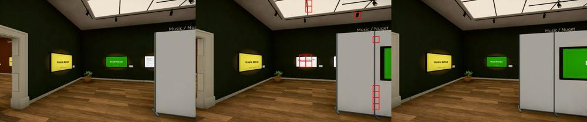
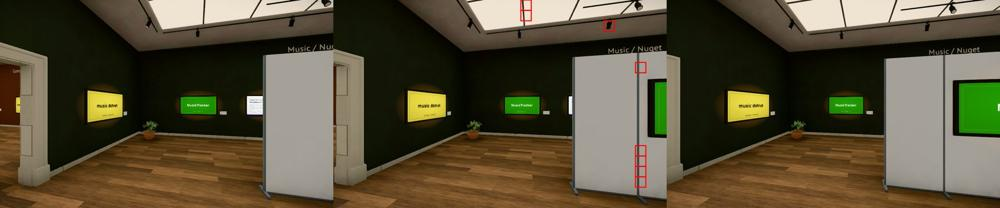
57. Des allées de vrai jardin
en ligne · PR #131Tu trouvais que les allées à angle droit faisaient jeu vidéo. D’après tes inspirations, elles sont refaites :
- plus aucun angle droit : des courbes douces, des jonctions évasées aux coins arrondis de 2 à 3 m ;
- une bordure de pierre à dessus arrondi le long de chaque allée, avec une bande de galets sombres entre la bordure et la pelouse ;
- une hiérarchie de revêtements : grandes dalles sur l’axe d’entrée, gravier fin sur les allées secondaires, dalles irrégulières posées dans le gravier près de l’eau ;
- des poteaux reliés par une corde côté étang, et des touffes de graminées aux courbes ;
- l’herbe ne pousse plus au travers des allées.
Encore perfectible : les dalles près de l’eau manquent un peu de texture de pierre, et les coins du parvis devant l’entrée restent droits (ils font partie du socle du bâtiment). Corrigé à l’étape 69.
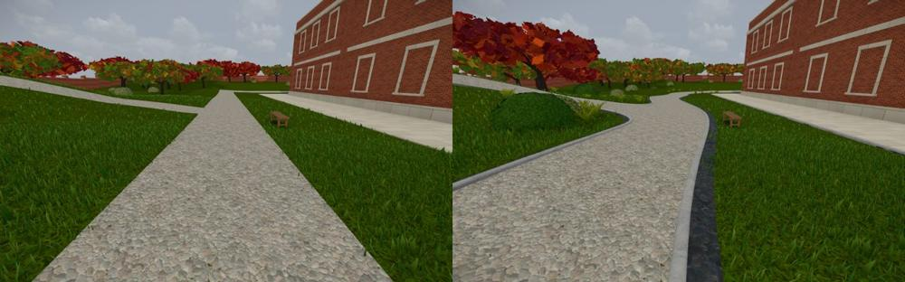
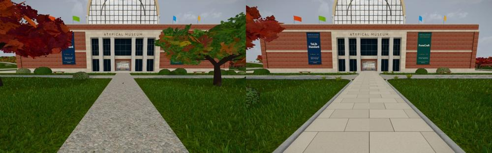
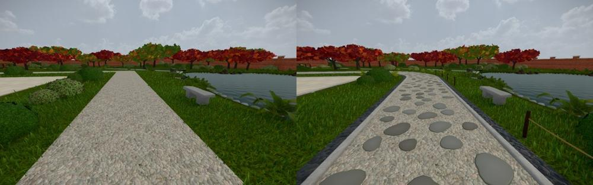
56. Sept bugs dans les galeries — 20 sur 20
en ligne · PR #126La chasse est terminée : 20 bugs visuels trouvés, corrigés à leur cause et vérifiés avant/après (7 dehors, 6 dans la nef, 7 dans les galeries).
- Les plafonds vitrés restaient allumés la nuit. Ils suivent maintenant le ciel. À l’étage, sous le toit, ils s’éteignent ; au rez-de-chaussée, sous un plancher, ils deviennent un éclairage électrique tamisé et chaud.
- Un cartel fantôme sur les cimaises. Il était bien placé, mais sa plaque crème disparaissait sur le stratifié blanc, et on ne voyait plus que son texte gris qui flottait. Sur une cimaise, le cartel est maintenant sombre à lettres crème.
- Des tableaux flous de près. Le moteur n’affichait que la petite vignette. Les six tableaux les plus proches passent maintenant à leur image haute définition.
- Un rebord blanc en haut des murs, côté nef, dans les galeries de l’étage. La corniche de la nef traversait le mur et ressortait de 25 cm dans les salles.
- Les portes de la salle d’honneur étaient des trous nus vus des galeries. Elles ont maintenant leur chambranle et leurs plinthes.
- Les noms des salles luisaient dans le noir. Ils sont maintenant peints sur le mur et s’éteignent avec la salle.
- Le nom de la galerie du nord était coupé par la cimaise. Il est remonté à 3,95 m.
Et j’ai refait le calcul de lumière dans Blender, pour que la nouvelle bande de pierre de la nef (étape 55) et la corniche corrigée aient leur éclairage.
55. Six bugs dans la nef et la salle d’honneur
en ligne · PR #124- La cloche disparaissait. Entre deux coups, le calcul de son balancement donnait « pas un nombre », et le moteur ne la dessinait plus. Elle reste maintenant visible au repos.
- La cloche était mal accrochée. Elle traversait le cadran et pendait d’un bras qui finissait dans le vide. Elle pend maintenant à un bras de fer scellé dans la console dorée, par un joug et un axe passés dans son anse. Elle se balance autour de cet axe, et son marteau est remis à l’endroit.
- Des taches de lumière au plafond de la salle d’honneur. C’étaient les rayons de soleil de la nef, qui passaient à travers le mur nord. Ils restent maintenant dans la nef.
- La nef noyée de blanc. Les rayons et la brume étaient trop forts. Ils sont à moins de la moitié, et la voûte et les murs restent lisibles.
- Une bande de parquet en travers de la pierre, au-dessus des volées et sous la baie. C’était la tranche du plancher de l’étage ; une bande de pierre la couvre désormais.
- Un bout de sous-face d’escalier dans le vide, sous le palier. Il dépassait de 6 cm ; la volée part maintenant du dessous du palier.
À gauche avant, à droite après, sur chaque image.
54. Sept bugs dehors et au jardin
en ligne · PR #123- Bannières de façade illisibles, et pas les tiennes. Elles montraient
clean-architecture-manga, un dépôt d’un autre auteur sur lequel tu es seulement collaborateur. Elles affichent maintenant tes projets de la salle d’honneur, en grand, sur bleu nuit et vert profond. La récupération GitHub écarte désormais les dépôts dont tu n’es pas propriétaire. - Des allées qui butaient contre un mur sans porte, au nord, à l’ouest et à l’est. Elles s’arrêtent maintenant à l’allée qui fait le tour du bâtiment, devant un banc tourné vers le parc.
- Des façades latérales et arrière nues. Elles ont maintenant un soubassement de pierre, un bandeau, une corniche, des pilastres et des fenêtres aveugles encadrées de pierre.
- Le bord du monde visible. Un mur d’enceinte à chaperon de pierre entoure maintenant le parc, avec une grille en fer forgé au bout de chaque allée, la campagne au-delà et une rangée d’érables.
- Des allées sinueuses en dents de scie. Leurs bords sont maintenant d’un seul tenant.
- La lanterne de pierre allumée en plein jour. Elle ne s’allume plus qu’au crépuscule.
- Un ruisseau qui naissait d’un bout carré dans la pelouse. Il sourd maintenant d’entre des rochers.
53. Le compteur, la licence, l’image de partage
en ligne · PR #121 et #122Le compteur de visiteurs comptait bien (56 visites) ; c’est son animation qui s’arrêtait une image trop tôt. Les tambours restaient entre deux chiffres, voire sur leurs tirets, et ils s’arrêtent maintenant pile sur leur chiffre. Le dépôt est passé sous licence MIT, et tu as installé l’image de partage sur GitHub.
52. Le liseré sous les baies cintrées
en ligne · PR #120Les deux textures qui se superposaient appartenaient à deux modèles : la corniche de la nef, faite dans Blender, et le parement de pierre du hall, dérivé du plan. Leurs faces tombaient exactement dans le même plan, à 18 cm de l’axe du mur, et la carte graphique n’arrivait pas à choisir laquelle afficher devant. La corniche avance maintenant de 24 cm et passe nettement devant la pierre.
51. Les cimaises, avec du recul
en ligne · PR #118Tu avais raison : à 2 m d’un mur accroché, on ne peut pas reculer pour regarder un tableau. Chaque salle chargée à plus de 60 % a maintenant une seule longue cimaise de 7 modules, qui porte deux tableaux par face. Elle est à plus de 3,3 m de tout mur accroché et hors des lignes de vue entre les portes. Les salles concernées : Trading & finance, la galerie du nord, Librairies .NET, Parsers & langages et Simulation. Un test signale toute salle qui dépasse 60 % sans cimaise. Les bancs ont été replacés et la lumière recalculée.
Au passage, j’ai corrigé un bug du tri de visibilité (#113) qui pouvait faire disparaître une cimaise, et laissait ses tableaux flotter dans le vide. Le titre d’une salle passe aussi au-dessus de sa cimaise.
Captures prises dans une copie de travail sans les images des tableaux (rectangles verts) : sur le site, ce sont bien tes tableaux.
50. README, aperçus de partage, favicon
en ligne · PR #116 et #117Le README est réécrit : une visite en captures, les commandes, les paramètres d’URL, l’architecture en bref et un lien vers ce journal, désormais aussi dans le repo (docs/journal/). Un lien vers le musée partagé sur un réseau social affiche maintenant la nef ensoleillée (balises OpenGraph et Twitter). L’onglet a sa favicon : l’horloge de la gare.
À faire toi-même : GitHub ne permet de définir l’image de partage du dépôt qu’à la main. Va dans Settings → General → Social preview, puis téléverse docs/social-preview.png. Le dépôt n’a pas encore de licence.
49. Bavette moins pomme de terre
en ligne · PR #115Pour le rendre « trapu », j’avais élargi son tronc de 10 %, et il ne mesurait que 47 cm du museau à la queue. Son corps et son squelette sont maintenant étirés de 8 % dans la longueur, soit 50 cm, le haut de tes mesures, et son tronc garde sa largeur d’origine. Assis, son bassin bascule un peu moins, pour que ses pattes avant restent bien posées.
48. Des cimaises modulables Novo
en ligne · PR #114Les cimaises suivent la fiche Novo : modules de 1 m × 2,50 m, 40 mm d’épaisseur, stratifié blanc, connecteurs d’aluminium, pieds posés en travers. Deux cimaises parallèles de 4 modules sont installées dans Librairies .NET, Parsers & langages et Trading & finance, la seule salle qui était pleine. Chaque face porte un tableau avec son cartel, son spot et son rail. Personne ne les traverse, ni toi, ni la visite guidée, ni Bavette. Il reste au moins 2 m de circulation partout, et aucune porte ni ligne de vue n’est barrée.
En les vérifiant, j’ai trouvé une tache sombre au sol de Trading & finance : la lumière calculée dans Blender gardait l’ombre du banc à son ancienne place. J’ai refait le calcul, avec les cimaises qui font désormais écran.
Limites : une cimaise de 4 m ne porte qu’un tableau par face, car tes tableaux font 1,70 à 2,20 m de large. Seuls des alignements droits sont possibles pour l’instant (pas de L, de T ni de zigzag). Corrigé à l’étape 72.
47. Plus rapide, et des rayons de soleil sous la verrière
en ligne · PR #113Le musée ne dessine plus les salles qu’on ne peut pas voir d’où l’on est : dans une galerie, il affiche deux tiers de triangles en moins. L’écran d’accueil s’affiche deux fois plus vite, car il ne télécharge plus le moteur 3D d’un bloc. Les textures sont compressées pour la carte graphique (93 Mo de mémoire vidéo ramenés à 15, 24 Mo de téléchargement ramenés à 9,5).
Dans la nef, des rayons de soleil et de la poussière en suspension descendent de la verrière selon la vraie position du soleil. Ils disparaissent quand le ciel est couvert ou dans le brouillard. Fin septembre le soleil est bas : c’est vers 13 h 30 qu’ils sont les plus beaux.
Depuis la nef presque tout reste visible, donc le gain s’y voit peu ; il est net dans les galeries et le jardin.
46. Les pattes arrière de Bavette
en ligne · PR #112J’ai mesuré sa foulée image par image dans ta vidéo. Son pas arrière était trop court : la patte partait loin derrière, raide, et tirait un pli de peau sous le ventre. Maintenant elle se pose sous le ventre, le talon se lève dès le milieu de l’appui, le jarret se replie juste après le décollage et le genou reste en avant, sous la hanche. Le pli de peau a disparu.
Limite : la vidéo est petite (512 × 288), la longueur exacte du pas reste une estimation. Son corps est toujours un peu haut sur pattes : le baisser plie la patte en Z à cause du tibia court du modèle.
45. La mosaïque, du lundi au dimanche
en ligne · PR #111En Belgique la semaine commence le lundi : les colonnes vont maintenant du lundi à l’ouest au dimanche à l’est (L M M J V S D). Les jours sans contribution sont en pierre grise, nettement à part de l’or le plus pâle.
44. Une étoile pour tes projets
en ligne · PR #110Devant chaque tableau et sur la borne de la salle d’honneur, un bouton « ★ Mettre une étoile » affiche le nombre d’étoiles du projet. On le clique, ou on appuie sur E. Il ouvre la page GitHub du dépôt, où le bouton Star est à un clic.
Le musée ne peut pas mettre l’étoile à la place du visiteur : il faudrait que celui-ci connecte son compte GitHub au site, ce qu’un site statique ne peut pas faire. Les nombres d’étoiles viennent du catalogue de juillet ; les rafraîchir, c’est relancer la récupération des données GitHub.
43. Carpes koï, oiseaux et lucioles
en ligne · PR #109Dix carpes koï se rassemblent devant toi quand tu t’approches du bord de l’étang et viennent gober en surface. Des moineaux et des mésanges se perchent au bord des arbres (sur les branches nues en hiver), picorent les allées, volent d’arbre en arbre et s’enfuient si tu approches. Sous la pluie ils restent à l’abri, et la nuit ils dorment. Les nuits chaudes et sèches de la belle saison, des lucioles clignotent au-dessus de l’eau (?saison=ete&heure=23:00).
42. Les ombres, et la lune ne traverse plus les murs
en ligne · PR #108La lumière de la lune et celle du soleil sont la même lumière dans le moteur, et elle n’avait pas d’ombres : elle traversait les murs et laissait ce reflet bleu sur le sol du hall. Elle porte maintenant de vraies ombres. Le bâtiment l’arrête, et elle n’entre plus que par la verrière, les fenêtres et les portes ouvertes. De jour, le soleil dessine la résille de la verrière sur le sol de la nef. Il y a aussi des ombres douces sous les meubles et sous Bavette, et de vrais reflets : le ciel dehors, chaque salle dedans.
Les galeries du bas ne reçoivent plus le soleil qui passait à travers leur plafond ; elles restent éclairées par leurs verrières et leurs spots.
41. Plinthes et main courante
en ligne · PR #107Une plinthe de 12 cm court au pied de chaque mur et s’arrête aux portes. Elle est en granit sombre dans le hall, en pierre claire sur les murs de couleur des salles. Côté mur, les volées de l’escalier ont maintenant une main courante d’acier scellée au mur, sur consoles, à 90 cm au-dessus des marches.
40. La lumière cuite dans Blender
en ligne · PR #106Blender (Cycles) a calculé comment la lumière du ciel entre par la verrière et les fenêtres, puis rebondit sur la pierre. Ce calcul est enregistré dans une seule image de 80 Ko que le site applique aux murs et aux sols. Les dessous des balcons, les murs qu’ils abritent et les coins s’assombrissent ; le sol reste le plus clair sous la verrière. Le soleil et les lampes restent en temps réel.
Limite : l’escalier de marbre et la salle d’honneur (modèles Blender à part) n’en profitent pas encore, et l’escalier paraît maintenant un peu trop clair à côté des murs. Corrigé à l’étape 73.
39. La vraie météo de Bruxelles et les saisons
en ligne · PR #105Le jardin prend le temps qu’il fait vraiment à Bruxelles (relevé toutes les 15 minutes) : pluie avec des ronds sur l’étang et des coulures sur la verrière, neige qui tient sur la pelouse et les corniches, brouillard, orage avec éclairs, vent dans l’herbe et les érables. Il ne pleut jamais à l’intérieur.
Les saisons suivent la date : aujourd’hui, fin septembre, les érables commencent à rougir. En automne les feuilles tombent au pied des arbres, en hiver les branches sont nues et la pelouse ternit, au printemps les azalées fleurissent.
Pour essayer sans attendre : ?meteo=pluie, neige, brouillard, orage, et ?saison=printemps, ete, automne, hiver à la fin de l’adresse.
Limites : les érables nus en hiver n’ont que leurs grosses branches, sans rameaux ; les chemins mouillés foncent mais ne reflètent rien. Corrigé à l’étape 68.
38. Les portes, cette fois contre le mur
en ligne · PR #104Tu avais raison : je n’avais pas vérifié. J’avais accroché les paumelles à la face extérieure du mur au lieu de sa face intérieure, et les battants flottaient à 28 cm dans le vide. Ils sont maintenant posés contre le mur, côté hall. Un test vérifie cette position, et je l’ai contrôlée sous quatre angles (de côté, depuis le hall, du dehors, et le parvis vu d’en haut).
Les deux textures qui se superposaient étaient le dallage du parvis et le gravier de l’allée, posés à la même hauteur. Le dallage est maintenant 1 cm au-dessus.
37. Ta mosaïque, la cloche, le compteur
en ligne · PR #102Ton graphe de contributions GitHub est incrusté dans le sol de la nef : une tesselle par jour, en or plus ou moins soutenu selon l’activité, sur une échelle logarithmique pour que tes très gros jours n’écrasent pas le reste. La plus vieille semaine est à l’entrée ; tu remontes l’année en marchant vers l’escalier. Une plaque de laiton donne le total.
Quand un de tes projets publie une nouvelle version, la cloche de la nef sonne et l’annonce. Un compteur tient le nombre de visiteurs.
36. L’ambiance sonore
en ligne · PR #101Bouton « Son » en haut à droite (ou touche M), coupé par défaut. Tout est synthétisé dans le navigateur, sans fichier audio :
- tes pas, qui changent selon le sol : la pierre de la nef qui résonne longuement, le parquet des galeries, le bois du pont, le gravier, l’herbe ;
- le tic-tac de l’horloge, le carillon de Westminster à chaque heure (et quand un projet publie une nouvelle version), le cliquetis des palettes du tableau ;
- au jardin : les oiseaux le jour, les grillons la nuit, le ruisseau, la cascade, le vent ;
- et Bavette qui ronronne quand tu t’approches de lui.
Je ne peux pas écouter : j’ai vérifié chaque son par un rendu hors ligne (ni silence, ni saturation). Ton oreille est le vrai juge ; dis-moi ce qui sonne faux (les grillons et les oiseaux sont les plus simples).
35. De vraies portes d’entrée
en ligne · PR #99Tu avais vu Bavette traverser un battant noir sans gonds. Les portes sont maintenant en verre clair, avec trois paumelles de bronze par battant et une barre de tirage des deux côtés, et on ne les traverse plus : ni toi, ni Bavette.
34. Bavette marche comme dans ta vidéo
en ligne · PR #100J’ai mesuré sa marche image par image dans ta vidéo : un cycle de 0,93 s, un pas de 40 cm, 0,43 m/s, les pattes dans l’ordre arrière gauche, avant gauche, arrière droite, avant droite, la tête basse au ras du dos et la queue basse. Son animation est refaite sur ces mesures, sans que les pattes glissent. Assis, sa queue s’enroule autour de ses pattes.
Sa taille était déjà juste : 30 cm au garrot, 47 cm du nez à la queue. S’il paraît petit, c’est l’angle de la caméra, très large (75°), qui éloigne tout. Je l’ai rendu un peu plus trapu, comme sur la vidéo.
Encore imparfait : un pli de peau entre le ventre et la patte arrière quand elle est tendue en fin de pas, et un corps un peu plus haut sur pattes que le vrai Bavette. Corrigé aux étapes 74 et 75.
33. Le mobilier
en ligne · PR #98Des banquettes de velours vert capitonné dans les galeries, des bancs de chêne et cuir dans la nef, une banque d’accueil en noyer avec sa lampe de banquier, deux bancs doubles Batlló en chêne dans la salle d’honneur, un banc de granit face à l’étang et trois bancs de cèdre au jardin. On ne les traverse pas, et Bavette fait la sieste au bout de certains bancs. (Captures prises avant la passe de polish : les murs des galeries sont maintenant en couleur.)
32. Les captures d’écran de tes projets
en ligne · PR #97Captures : en ligne après la prochaine reconstruction nocturne, ou dès que le déploiement en cours aura fini de photographier les sites.
Les toiles montrent maintenant tes projets eux-mêmes, et plus seulement leur nom : une capture du site en ligne quand il existe (32 projets), sinon la première vraie image du README (61), sinon la carte GitHub (23). Tout est refait chaque nuit.
Devant une toile, la carte montre la capture, et Entrée ouvre le site ; E reste pour voir le code sur GitHub. Même chose sur les bornes de la salle d’honneur.
À corriger de ton côté, dans le champ « site » des dépôts : nuke.build (le domaine ne répond plus), la page NuGet d’Antlr4Library, le GitHub Pages de TheAppManager et paulovich.net/acerola (404). Geometrix met plus de 30 s à charger.
31. Polish : réalisme et corrections
en ligne · PR #95- Les toiles ont retrouvé leur contraste (elles étaient délavées) ; les galeries ont des murs de couleur comme à Orsay, et du parquet au rez-de-chaussée.
- L’entrée a de vraies portes vitrées à cadre de bronze, grandes ouvertes, et un seuil de pierre. Le parvis est dallé, et chaque allée rejoint le parvis : on n’entre plus par le gazon.
- Le gravier des allées est beige-gris au lieu d’un blanc aveuglant.
- La nuit, les salles gardent leur lumière chaude au lieu du bleu de la lune.
- Bugs corrigés : les rails qui se croisaient dans les angles, et les cartels qui apparaissaient et disparaissaient (les plaques restent, seul le texte s’efface au loin).
30. La baie Batlló sur toute la largeur
en ligne · PR #96La baie occupe maintenant tout le mur sud de la salle d’honneur (14,40 m) : six colonnes en os, sept arcs ondulés qui montent vers le centre, une rose de vitrail par travée autour de la rosace sculptée. Le chêne est un peu plus sombre, moins moutarde. La salle d’honneur accroche quatre toiles au lieu de six.
Polish : ce qui n’existerait pas dans un vrai musée
en coursTa remarque sur la porte et le gazon est juste, et le défaut se répète ailleurs. Voici ce que j’ai relevé en parcourant le musée comme un visiteur.
- Une entrée sans porte : il faut de vraies portes vitrées à deux battants, ouvertes, avec un tambour ou un sas.
- Marcher sur le gazon pour entrer : une bande de pelouse coupe l’allée du parvis. Il faut une allée pavée continue du jardin jusqu’aux marches de l’entrée, un vrai parvis dallé, et quelques marches.
- Des allées d’un blanc aveuglant : du gravier ratissé beige-gris, bordé de pierre, comme dans un jardin japonais.
- La nuit, l’intérieur baigne dans le bleu de la lune : un musée ouvert est éclairé par ses propres lumières, chaudes. Et dehors, rien n’éclaire les allées : il faut des lanternes et des bornes lumineuses le long des chemins, et la façade éclairée.
- Aucune signalétique : pas de plan du musée à l’entrée, pas de flèches, pas de numéros de salle, pas de pictogrammes « sortie ».
- Des plantes posées sur des cubes gris : il faut de vrais bacs, ou les retirer des galeries (un musée évite les plantes près des œuvres).
- Pas de sol devant le seuil : le sol extérieur s’arrête net contre l’entrée.
- Un lanterneau au quadrillage noir épais : de fins meneaux métalliques et un verre plus lumineux.
- Les toiles ressemblent à des écrans : cadres noirs épais et images de cartes GitHub. Les captures d’écran de tes projets sont en cours ; les cadres suivront.
Déjà corrigé dans cette passe : les toiles délavées (elles ont retrouvé leur contraste), des murs de couleur dans les galeries comme à Orsay, du parquet au rez-de-chaussée, des halos plus discrets, et les rails qui se croisaient. En cours avec les agents : le mobilier, Bavette à la bonne taille avec une marche réaliste, les captures d’écran de tes projets avec l’accès à leur site, et la baie Batlló sur toute la largeur.
D’autres éléments vivants : les pistes
retenus, en cours- La météo réelle de Bruxelles : la pluie qui ruisselle sur la verrière et fait des ronds dans l’étang, le brouillard, la neige en hiver (données Open-Meteo, gratuites et sans clé).
- Les saisons : les érables qui passent du vert au rouge en automne, nus en hiver, en fleurs au printemps, selon la date réelle.
- Le calendrier de tes contributions en mosaïque au sol de la nef : 365 carreaux dont la teinte suit ton activité GitHub, comme le graphe vert de ton profil, en marbre et en or.
- Des carpes koï dans l’étang, qui viennent à la surface quand on s’approche ; des oiseaux dans les arbres, des lucioles la nuit.
- Une ambiance sonore : les pas qui résonnent dans la nef, les oiseaux et l’eau au jardin, le tic-tac de l’horloge, le cliquetis des palettes du tableau (activée par un bouton).
- Une cloche des versions : quand un de tes dépôts publie une nouvelle version, l’horloge sonne et le tableau l’annonce.
- Un compteur de visiteurs façon compteur mécanique à l’entrée.
27. La salle d’honneur, façon Casa Batlló et Cernuschi
en ligne · PR #93- Tes trois meilleurs projets sur le mur nord : TaLibStandard, FormCraft et VirtualFileSystem. Chacun a son grand panneau bordeaux, comme au musée Cernuschi : le nom, un filet, le début du README en deux colonnes, l’image du dépôt dans un cadre doré sculpté, un cartel et son projecteur.
- Une borne rouge interactive devant chaque panneau. Approche-toi et le README complet s’ouvre, avec les langages, les étoiles et le dernier push. La molette fait défiler, E ouvre le dépôt sur GitHub et H ouvre son site.
- La salle elle-même, dans l’esprit de la Casa Batlló : une voûte de plâtre en tourbillon autour d’une lampe-soleil de laiton, des murs crème aux angles arrondis, des pilastres en forme d’os, un lambris de chêne ondulé, des encadrements de porte en chêne sculpté semés de cives colorées, et un parquet en point de Hongrie qui pointe vers la baie.
Les images des dépôts sont encore les vignettes de ma machine ; en ligne, ce seront les vraies images GitHub.
26. Bavette en liberté
en ligne · PR #94Bavette a quitté son socle. Pour pouvoir l’animer, il fallait un modèle de profil, la tête droite. Meshy a donc redessiné ta photo de profil puis refait le modèle 3D (39 crédits), avec la même robe tigrée et blanche, la queue sombre et le poitrail blanc. Regarde bien si c’est lui.
- Un squelette de chat (29 os, queue articulée) et quatre animations faites dans Blender : marcher, se tenir debout en respirant et en regardant autour, s’asseoir, rester assis.
- Il se promène seul, d’un coin tranquille à l’autre : devant les toiles, dans le hall, sur le palier, sur les balcons, sous les arbres du jardin. Il prend les portes et le grand escalier, ne traverse jamais un mur, et s’assoit quand il fait une longue pause.
- Quand tu t’approches, il tourne la tête vers toi, et une petite carte apparaît : « Bavette — Il se promène librement dans le musée et dans le jardin. — Philippe Matray, 2026 ». La minimap montre où il est.
Il est à taille réelle (36 cm aux oreilles), donc petit vu de haut. Je peux le grandir un peu si tu préfères.
25. Le jardin : bosquets, vrai gazon, relief
en ligne · PR #92- Les anciens arbres sont retirés. Le parc est planté en bosquets d’érables rouges ou verts, plus grands au cœur, bordés de buis et d’azalées, avec des clairières et quelques isolés.
- Un vrai gazon : 160 000 brins d’herbe qui ondulent au vent autour de toi, sur un sol mat qui ne brille plus. Ils s’arrêtent aux allées, à l’eau, aux troncs et aux rochers.
- Du relief : des vallons et des buttes douces jusqu’à 3,3 m, qu’on monte et descend en marchant. Le bâtiment, le parvis, l’allée d’entrée et les abords de l’eau restent à plat.
24. Les portes
en ligne · PR #90Le choix que tu m’avais laissé : chaque porte a un chambranle de pierre mouluré sur ses deux faces, posé sur deux plinthes et modélisé dans Blender. Côté nef et balcons, une corniche porte le nom de la salle et son nombre de projets en lettres de bronze, qui s’allument doucement la nuit. L’épaisseur du mur est habillée de pierre au lieu du blanc nu. La salle d’honneur n’est pas touchée : elle sera traitée avec son réaménagement Batlló.
23. Le jardin japonais
validé, en repriseD’après ta photo de Hasselt : un étang sombre bordé de rochers moussus, de fougères et de galets au sud-est de l’entrée ; un ruisseau qui serpente depuis une source, passe sous un pont de bois arqué et tombe en petite cascade dans l’étang ; des érables du Japon rouges et verts, des dômes de buis et d’azalées en fleurs, des pétales roses au sol, une lanterne de pierre et un pas japonais. L’allée d’entrée reste droite et dégagée ; les autres allées serpentent. On ne marche pas dans l’eau, sauf sur le pont.
Points faibles connus : la cascade ressemble encore à une nappe blanche, et le ruisseau est une bande plate aux bords droits.
22. Bavette, remodelé d’après ta photo
en ligne · PR #89Un nouveau modèle 3D tiré de ta photo (Meshy, 30 crédits utilisés sur les 2 000 autorisés) : Bavette debout, le pelage tigré et blanc, le regard par-dessus l’épaule. Il mesure 65 cm, un peu plus grand que nature, sur son socle dans la niche sous la volée ouest, visible dès l’entrée. Le cartel dit simplement « Bavette ».
21. L’escalier de marbre, façon Opéra Garnier
en ligne · PR #88Modélisé dans Blender. Marches en marbre crème veiné, nez arrondis. Les trois premières marches de la volée centrale s’évasent en courbes, comme la cascade de Garnier. Les flancs sont en marbre rouge griotte avec une moulure crème, et le palier est bordé d’une incrustation rouge. Les garde-corps de verre que tu avais validés restent, et Bavette reste bien visible sous la volée ouest.
19. La baie de la salle d’honneur, façon Casa Batlló
en ligne · PR #87Modélisée dans Blender, visible des deux côtés : deux colonnes de pierre en forme d’os, trois arcs souples, une menuiserie de chêne aux meneaux ondulés, des vitres arrondies et une rangée de petits ovales en bas, et en haut un bandeau de vitraux en médaillons bleus, turquoise, verts et blancs, avec une rosace centrale sculptée. À juger : le chêne paraît un peu plat et orangé face au bois sculpté de Gaudí.
18. Des projecteurs sur rail
en ligne · PR #86Tu avais raison : une toile ne peut pas s’éclairer sans source. Chaque toile a maintenant son projecteur noir, modélisé dans Blender, sur un rail au plafond à 1,60 m du mur, la tête inclinée vers elle. Quand tu regardes la toile, c’est ce projecteur qui s’allume.
16. Des toiles plus grandes
en ligne · PR #85Les toiles font maintenant au moins 1,70 m de large (1 m avant), jusqu’à 3,20 m pour les dépôts très étoilés. L’accrochage a été recalculé, et chaque salle, salle d’honneur comprise, garde toutes ses œuvres.
Correctif : des amas à différentes hauteurs
en ligne · PR #84Chaque salle de la constellation flotte maintenant à sa propre hauteur, entre 5,60 et 10,60 m, au lieu d’une nappe à un seul niveau.
Correctifs : la constellation suspendue, l’enseigne lisible
en ligne · PR #83- La constellation ne colle plus au plafond : elle flotte entre les deux balcons, de 6,10 à 8,60 m, à hauteur des yeux quand on est au balcon. Chaque étoile pend à un fil jusqu’à la voûte, les étoiles évitent les lanternes, et les noms des salles se tournent vers toi.
- « ATYPICAL MUSEUM » passe sur la face du linteau de pierre, là où rien ne le cache : bronze sur pierre le jour, lettres dorées allumées la nuit.
15. Le jour et la nuit, et la constellation qui s’allume
en ligne · PR #81Comme tu l’as choisi, le ciel suit le vrai soleil : sa position est calculée pour Bruxelles (modifiable dans la configuration du musée) et l’heure réelle, et recalculée toutes les 30 secondes.
- Le jour, le ciel nuageux et le soleil, qui se déplace pour de vrai. Au lever et au coucher, l’horizon se dore.
- La nuit, un vrai ciel étoilé avec la Voie lactée ; une lune froide remplace le soleil, et le musée reste éclairé de l’intérieur.
- La verrière cesse de luire, on voit les étoiles au travers, et les lanternes brûlent plus fort.
- La constellation de tes dépôts ne s’allume que la nuit : chaque dépôt est une étoile, plus grosse s’il a des étoiles GitHub, et chaque salle une constellation nommée.
Pour voir la nuit en plein jour, ajoute ?heure=23:00 à l’adresse du musée.
14. La constellation de la verrière
refaite en 15Le verre de la nef est laiteux en plein jour : des étoiles lumineuses s’y perdraient. J’ai donc pris le parti du plafond doré de Grand Central, à New York : un ciel d’étoiles d’or sous la verrière.
- Chaque dépôt accroché est une étoile ; plus il a d’étoiles GitHub, plus elle est grosse. Elles scintillent doucement.
- Chaque salle est une constellation : ses étoiles sont reliées par des filets d’or, et le nom de la salle est inscrit dessous. L’amas des grosses étoiles au centre, c’est ta salle d’honneur.
- Les étoiles évitent les arcs de la voûte, pour qu’aucune ne soit cachée derrière.
13. Des toiles qui s’éveillent, et la lumière de l’activité
en ligne · PR #80- Le projecteur : regarde une toile à moins de 4 m, un projecteur chaud s’allume en fondu au-dessus d’elle, et s’éteint quand tu passes à la suivante.
- La carte, en bas à gauche : le propriétaire, le nom, la description, une barre des langages aux couleurs de GitHub, les étoiles, les forks, le dernier push. La touche E ouvre le dépôt sur GitHub dans un nouvel onglet.
- Le halo : chaque toile poussée dans l’année porte un halo doré, à pleine intensité la semaine du push, qui pâlit de moitié chaque mois. En entrant dans une salle, on voit ce qui est vivant. Sur ces captures, les halos sont discrets parce que mon catalogue local date de juillet ; en ligne, tes pushs récents brilleront franchement.
12. Les drapeaux de Microsoft
en ligne · PR #79À ta demande : quatre drapeaux aux couleurs du logo Microsoft, puisque la collection est d’abord du C#.
Les portes : les pistes
choisies : 1, 2 et 3Aujourd’hui une porte est un trou rectangulaire dans le mur, avec des tableaux blancs nus. Voici ce que je propose ; les trois premières vont bien ensemble.
- Des encadrements de pierre moulurés autour de chaque porte, des deux côtés, avec une petite corniche au-dessus des portes qui donnent sur la nef. C’est ce qui fait « musée » au premier coup d’œil, à Orsay comme au Louvre.
- Des embrasures habillées : l’épaisseur du mur, qu’on voit en passant, devient de la pierre ou du chêne au lieu du blanc nu.
- Le nom de la salle au-dessus de chaque porte, côté nef, en lettres de bronze : « BLAZOR · 9 PROJETS ». On sait où l’on va avant d’entrer, et le thème annonce les dépôts.
- Des portes en plein cintre : le haut de l’ouverture en arc, comme les galeries d’Orsay. Plus spectaculaire, mais c’est un vrai chantier : les murs ne sont que des boîtes, il faut un linteau cintré modélisé pour chaque porte.
- De grandes portes vitrées à double battant, chêne et verre, ouvertes et rabattues contre l’embrasure : on les voit, on ne s’y cogne pas.
Correctif : l’entrée dégagée
en ligne · PR #77Vus du hall, deux piliers du portique se dressaient dans l’embrasure de l’entrée : la baie du milieu était plus étroite que la porte. Elle fait maintenant 3,80 m, l’ouverture plus 30 cm de chaque côté.
Faire vivre tes projets : les pistes
choisiesTu m’as demandé comment mettre tes dépôts en valeur pour que les visiteurs se disent « waw ». Le fil rouge : le musée doit raconter ton activité, pas seulement exposer des vignettes. Voici ce que je propose, du plus fort au plus simple. Dis-moi lesquelles tu veux, et dans quel ordre.
- Le tableau des départs (retenu, étape 10). Orsay était une gare : sous l’horloge, un grand panneau à palettes (split-flap) qui claque et affiche les derniers dépôts poussés, comme des trains au départ. « MusicTheory · C# · poussé il y a 2 h · Salle Musique & audio ». Le musée respire au rythme de ton travail, et chaque ligne dit où aller.
- Des toiles qui s’éveillent (retenu, avec les lumières dynamiques). Quand on s’approche d’une œuvre, un projecteur s’allume, le cadre s’ouvre en panneau : description, barre des langages, étoiles, date du dernier push, et les liens vers le dépôt et la démo. Aujourd’hui, on passe devant des vignettes muettes.
- La lumière de l’activité (retenue). Chaque tableau porte un halo selon la fraîcheur de son dernier push : doré s’il a bougé cette semaine, qui pâlit avec le temps. En entrant dans une salle, on voit tout de suite ce qui est vivant.
- Une constellation dans la verrière (retenue). La nuit tombée, la verrière devient un ciel où chaque dépôt est une étoile, sa taille selon ses étoiles GitHub, reliée à ses voisins de thème. On lève les yeux et on voit toute ton œuvre d’un coup.
- Un audioguide (écarté). Devant une toile, une voix lit sa description, avec la synthèse vocale du navigateur : aucun fichier audio, aucun coût. La visite guidée en profite aussi.
- Des visiteurs (pas pour l’instant). Quelques silhouettes discrètes qui déambulent et s’attardent devant les dépôts les plus étoilés. Un musée vide paraît mort ; ces silhouettes montrent aussi ce qui attire.
10. Le tableau « Mes derniers projets »
en ligne · PR #78Orsay était une gare : sous l’horloge pend désormais un tableau à palettes, titré « Mes derniers projets » comme tu l’as demandé, qui annonce tes derniers dépôts poussés à la manière des trains au départ. Pour chacun : depuis quand, le nom du dépôt, son langage, et la salle où le trouver.
Deux pages de six lignes alternent toutes les douze secondes, et les palettes tournent en vague, de gauche à droite, jusqu’à la bonne lettre. Les données viennent du catalogue reconstruit chaque nuit. Sur la capture, les dates sont celles de juillet parce que mon catalogue local est ancien ; en ligne, ce seront tes pushs de la veille.
9. La façade façon S.M.A.K.
en ligne · PR #76D’après ta photo du S.M.A.K. de Gand : la boîte de béton devient un bâtiment de brique, avec un portique de pierre devant l’entrée.
- Brique rouge-brun sur les quatre façades, parapet à couvertine de pierre qui cache le toit plat.
- Un portique de pierre large comme la nef : quatre piliers cannelés, des portes vitrées et de hautes verrières. La baie du milieu est l’entrée, ouverte. On contourne les piliers, on ne les traverse pas.
- « ATYPICAL MUSEUM » au fronton, tiré de la configuration du musée.
- Deux bannières qui annoncent les deux premiers dépôts de ta salle d’honneur (aujourd’hui MusicTheory et ts-blockchain) : elles changent toutes seules avec l’accrochage.
- Des drapeaux sur le toit, aux couleurs GitHub de C#, TypeScript, JavaScript, Python et HTML.
8. Des garde-corps de verre clair
en ligne · PR #72D’après ta photo de référence : fini les blocs de verre épais posés en marches d’escalier.
- Panneaux de verre clair de 15 mm, d’au plus 1,50 m, séparés par un joint fin.
- Une main courante d’acier continue par-dessus, à 1,00 m du sol.
- Le long des volées, verre et main courante suivent la pente d’un seul trait.
On ne passe toujours pas au travers : la marche n’a pas changé.
7. L’horloge à l’heure
en ligne · PR #71Les aiguilles tournent maintenant avec l’heure réelle du visiteur, sur un cadran de douze heures ; l’aiguille des heures avance doucement avec les minutes.
6. Le parc accessible
en ligne · PR #70On sort maintenant par l’entrée pour se promener dans le parc, sur les allées et la pelouse, jusqu’au bord du terrain (40 m autour du musée). Dehors, la façade reste un mur : on rentre par l’entrée. La minimap continue de fonctionner.
5. Des plafonds à lanterneau
en ligne · PR #69Les salles de l’étage étaient à ciel ouvert, et au rez-de-chaussée on voyait le dessous du parquet. Chaque salle d’exposition reçoit un plafond de plâtre et, au milieu, un lanterneau : un grand panneau de verre dépoli lumineux tenu par une résille, comme les salles à éclairage zénithal des musées. La lumière tombe sur les œuvres sans leur voler la vedette.
Les toiles paraissent noires sur ces captures parce que l’atlas des œuvres n’est pas construit sur la machine de travail ; en ligne, elles s’affichent.
4. Un vrai ciel
en ligne · PR #68L’aplat bleu est remplacé par une photo de ciel à nuages, libre de droits (Poly Haven), réduite à 252 Ko pour garder le site léger. Si elle ne charge pas, l’ancien bleu reste en fond.
3. L’allée des sculptures
abandonnéeRefusée, à raison : le musée sert à présenter tes projets GitHub, et les pièces cachaient Bavette depuis l’entrée. Rien n’a été mis en ligne ; Bavette est toujours dans sa niche, sous la volée ouest.
2. La pierre du hall
en ligne · PR #67Les murs gris du hall deviennent de la pierre de taille claire, comme la nef d’Orsay. Le côté galeries garde son plâtre.
- Parement en blocs de 1,20 m sur des assises de 60 cm, joints croisés, sur toutes les faces qui regardent le hall. Les portes restent ouvertes.
- Balcons en pierre : fini le parquet vu d’en dessous.
- Bandes de granit dans le dallage, deux le long de l’allée centrale et une sous chaque arc de la voûte, du pied de l’escalier à l’entrée.
1. La nef : voûte, verrière, horloge
en ligne · PR #66Le hall de 16 × 28 m était ouvert sur le ciel. Il est maintenant couvert, comme la gare d’Orsay.
- Voûte en berceau de 8 m de rayon, sommet à 20,6 m, sur 9 arcs doubleaux à caissons dorés.
- Verrière laiteuse au sommet, résille de fonte ; baies cintrées dans l’attique.
- Pignons vitrés, horloge dorée au fond de la nef, six lanternes de bronze.